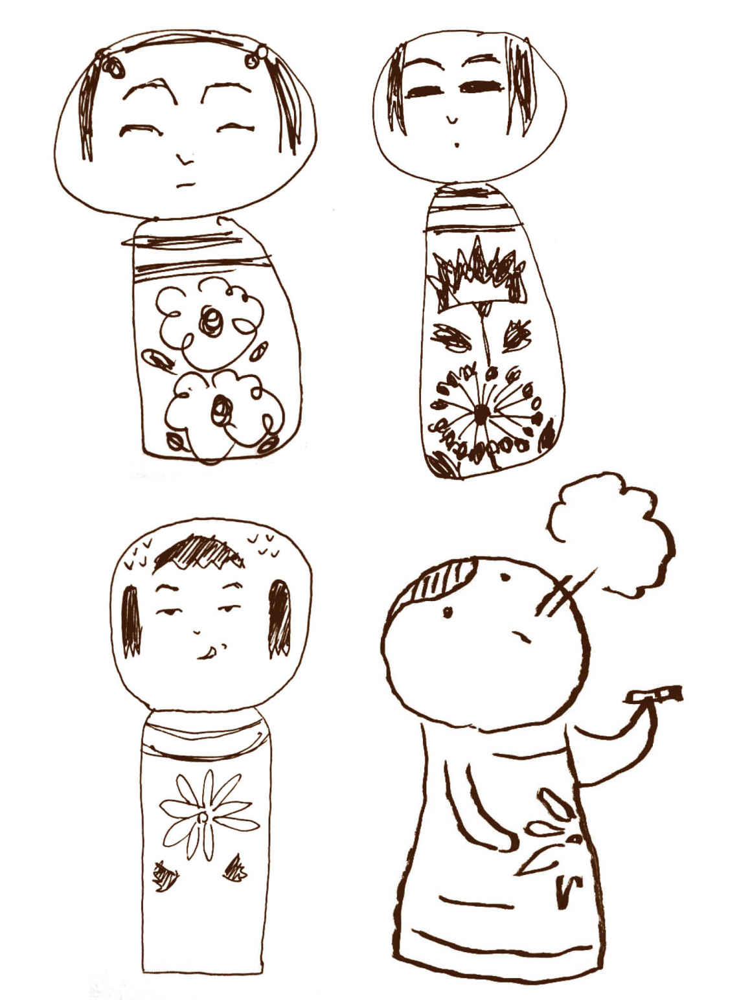
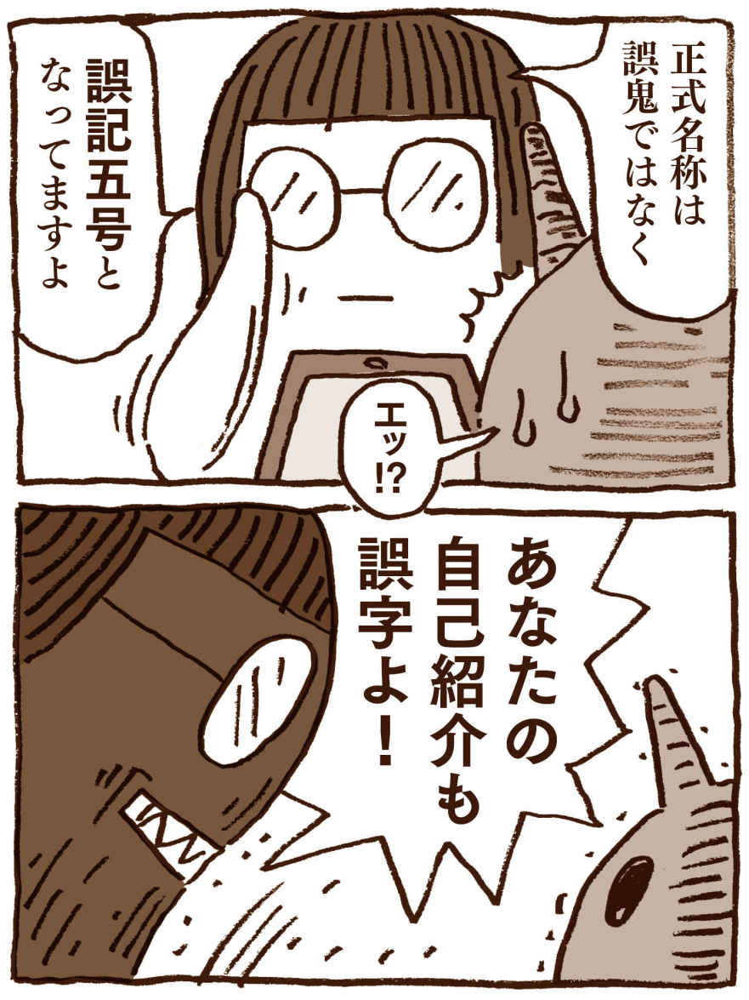

| ベリショーズ Vol.3: ベリーショートショートマガジン (ベリショーズ編集室) | |
| undoodnu 10101298 イチフジ UKITABI ことのは もも さささ ゆゆ 渋谷獏 & 新出既出 そるとばたあ たけなが 田辺ふみ たらはかに 豊丸晃生 のりてるぴか & バクテリア三昧 ぱせりん ハナヅキアキ 風月堂 壬生乃サル むう ゆた rantan ロッサ | |
| Berryshows (2019) | |
The fear is right beside you.
特集テーマ「恐怖」
世にも奇妙なベリショーズ──そるとばたあ
・Roots
・サスペンション
Your mam's so good lookin'baby──バクテリア三昧
※本書は、前半を「恐怖」テーマの小説33
編、後半を「自由」テーマの小説９編で構成しています。
────ゴド。
夫が食卓から、塩の入った小瓶を床に落とした。平日の朝。出勤前の夫と、専業主婦の私。食卓にトーストとベーコンエッグ。
「あ。大丈夫？」
私がテーブルの下を覗き込みながら言うと、夫は溜息を吐きながら、テーブルの下に潜って塩の小瓶を拾った。
「疲れてる？」
「そうだね」
「最近忙しそう」
「そうだね」
「今日の夕飯、お肉焼こっか。ワインも買ってきて」
「そうだね」
「早く......えっと、楽しみにしてて」
「そうだね」
●
昼間の家事を終えて、夕飯の買い出しに出た。
「あっつ......」
おもわず漏れた私の声が、一瞬にしてセミたちの合唱に呑まれ、散った。容赦のない熱気と陽射しに目を細める。遠くの空がごろごろと唸って夕立の気配もあったが、傘を取りに戻るのも面倒で、そのまま歩き出した。
ステーキかぁ。ワイン、ちょっといいの買えるかな。ホウレン草のソテー作って。トマトとモッツァレラチーズのカプレーゼ作って。
そんなことを思って俯き気味に歩いていたら、途中でふと前方に不吉を感じて足を止めた。ふぅ、と一つ息を吐いてから、陽射しに細めたままの目を凝らす。
電柱の足元に、白いペンキを零したような斑が広がっている。鳥の糞だろう、と思う。見上げると、電柱の上に何かの箱が設置されていて、おそらくそれが鳥の巣になっているらしい。
私は白く汚れた地面から、凝らした目を逸らさずに、ゆっくり、静かに呼吸を整えながら、少しずつ、少しずつ近づいた。ふぅ、大丈夫。私は私の血液が正常に体内を巡っているのを確認してから、その場を通り過ぎた。
●
タイムセールを巡り終えた頃にはやっと日も暮れ始めて、朱色と瑠璃色の斑な空を、無数のウミネコが舞っていた。夕立もなさそうだったから、少し迂回して行きとは違う道で自宅を目指した。
駅前の商店街を抜けたら、大通りの一本裏路地を選んで歩いた。この辺りは住宅よりも会社が多いみたいで、仕事終わりのスーツ姿が多く見られた。
ドン、バサバサ。
とつぜん目の前に一羽のウミネコが落ちてきて、動かなくなった。私は空を見上げた。
ドン、バサバサ。
ウミネコがビルの窓にぶつかっては、落ちた。
ドンドン、バササ、バサバサ。
また一羽、また一羽とウミネコが落ちて、動かない。
ドン、バサバサ、バサ、サ────
●
「──って、何羽も落ちてきて、皆死んじゃったの」
その晩、お風呂上がりの夫とワインを飲みながら、今日のできごとについて話していた。食卓にはホウレン草のソテーと、カプレーゼ。
「すごい可哀相だった」
「そうだね」
「そろそろお肉焼く？」
「そうだね」
「もう、そうだねばっかり」
「あぁ、そうだね。......そういえば、今日は新月なんだって」
夫は伏し目がちに、トマトと、モッツァレラチーズと、ホウレン草をフォークで順番に刺したり、皿をくるくる回したりした。
●
深夜、私はなんだか眠れずに、台所でコップ一杯水を飲んだ。
──そういえば、今日は新月なんだって。
なんとなく夫の言葉を思い出して、窓のカーテンを引いた。空には星が一つもなくて、私は曇っているのかな、と思った。そのまま寝巻きでベランダに出て、空を見上げた。すると闇が、真っ黒の夜空が、音もなく地上に迫っていた。
落ちてくる！
私は急いで寝室に戻って、夫を起こそうとした。
「起きて！ ねぇ大変！ 起きて！」
どんなに体を揺すっても、夫の抜け殻は返事をしない。
「起きてってば！ お願い助けて......」
返事がない。私はもう一度ベランダに出て空を見上げた。ゆっくりと、静かに、空が落ちてくる！
●
私は助けを求めて走った。黒い空が迫る団地を、必死に走った。汗で髪が、寝巻きが、肌にへばりつく。誰もいない。セミの声も止んで、私の呼吸の音だけが、天井の闇に吸い込まれていく。
誰もいないのに、辺りは人の気配に満ちていた。どこまでも並び建つ巨大なマンションの窓一つ一つに、私の知り得ない誰かの気配がある。いったいどれだけの人間が、この小さな街に住んでいるのか。ひしめく窓の一つ一つが、私の住んでいる世界とまったく別の宇宙だった。
〝あんたが母親を殺した〟
窓の一つが言った。私は誰も殺してない。
〝一度産まれたあんたをそのまま産道に押し戻したんだよ。出口を自分で縫って塞いだりして〟
また別の窓が言う。
〝生き残ったのはあんただったけど〟
窓たちが笑い合った。私はきゅうに吐き気に襲われて、赤ワインの反吐と臭気を植え込みに撒き散らした。
〝次はあんたの番〟
〝次はあんたの番〟
〝次はあんたの番〟
街が潰れだした。黒い空が目前だった。私はまた必死に走り出した。
あと少し！
私はようやく鳥の巣の電柱にたどり着いた。巣から落ちた雛の死骸が、まだそのままにされている。
グヂャ。
黒く干からびた雛の死骸を、私は思い切り踏み潰した。
グヂャ、ヂャ。
何度も。何度も。
風呂上がり、俺はこけしの頭で肩を叩いていた。
「あ、蚊」
おもわず握っていたこけしでちゃぶ台を殴ると、こけしの頭が折れて飛んでいった。
「きゃあああああ！」
「わああ！ ごめえええん！」
こけしの頭が悲鳴を上げて床を転がる。ころころ転がって、壁に当たって止まった。
「え......、だいじょぶですか？」
「もう、ご主人様ったら。乱暴なんですから」
飛んでいった頭がこちらを向いて、にっこり微笑んだ。
「こけしがしゃべってる......」
「肩を叩いたり首を飛ばしたり......、人事部か！」
「何言ってるかわかんないけど。今直しますから。接着剤あったかなぁ」
押入れを覗いて、工具箱を探した。
「ところでご主人様」
「はい」
「今のわたくしは、頭と胴の二つに分かれてしまいましたが、わたくしの、心というものはどちらにあるのでしょう。もしもわたくしが恋をしたとき、どの辺りがときめきますか？」
「ないよ。こけしに心なんか。あったらホラーでしょ」
「もう、そんな心ないことおっしゃって。こけしか！」
工具箱が見つかって、中には接着剤も残っていた。
「あ、あった接着剤。これどっちが前でどっちが背中だっけ？」
円柱形の胴を眺めながら、頭に聞いた。
「セクハラです」
どっちでもいいや、と思って拾い上げたこけしの頭は、赤い血の涙を流していた。俺はとつぜん首の辺りを掻き毟りたい衝動に駆られて──。
体が浮腫んで熱っぽく、乾いた咳が続いていた。部屋の空気を入れ替えようと窓を全開にすると、網戸から雨上がりの湿った風が流れ込んできた。
下校の時刻らしい。色とりどりの長靴とランドセルの集団が、傘を振り回して歩いてくる。俺は開けたばかりの窓を僅かな隙間だけにする。子供達が、窓の前の空地の水溜りを長靴で撥ね上げたり、傘で草むらをなぎ払ったり、たんぽぽの茎を折り取って、「手が黄色くなったぁ～」とか「ヘンなにおい～」とか言いながら、綿毛を吹いたりしていくからだ。
たんぽぽの綿毛を吹いてはいけない。
子供の頃、俺が原っぱで遊んでいると、母はものすごく怖い顔で連れ戻しに来たものだ。原っぱには肥溜めがあったりして、危険だったからだろう。
だが、母はなぜ「たんぽぽ」のことなんかを引き合いに出して怒ったのだろう？ 確かにそこにはたくさんのたんぽぽが生えていたが......
どうして、たんぽぽを吹いちゃいけないの？
身体に入ると死んじゃうからよ。
母はそう言っていた。だが、たんぽぽの綿毛で人が死ぬ、なんてことがあるのだろうか？
俺はゴロリと寝返りを打って、検索をしてみた。外では子供達が「目に入った～」とか「いっぱい飛んだ～」などと騒いでいる。
【たんぽぽ 在来種と外来種】
セイヨウタンポポは明治初期に食用として北海道に輸入された。背が高く繁殖力も強いが寒さに弱い。一方、在来種は背が低く繁殖力に劣るが寒さに強い。また、受粉後二週間程で綿毛を形成しつつ、花茎を著しく伸長させて風を受けやすくする。
あの原っぱのたんぽぽは在来種だった。そして駐車場のは...... と、窓の隙間から外を窺う。その途端に激しく咳が出て、慌てて顔を引っ込める。女の子が不審そうにこっちを見た。たんぽぽは在来種だった。
【条件的アポミクシス（単為生殖）】
帰化したセイヨウタンポポのほとんどは単為生殖（クローン）で殖える。在来種は群生し、他の株の花粉によってのみ受粉する。遺伝子の多様性を獲得するためには受粉が有効だが、群生数が減ると受粉そのものが難しくなる。
だからセイヨウタンポポは増えるのか、と俺はものすごく賢くなったような気になる。
【交雑種】
基本的に単為生殖するセイヨウタンポポだが、受粉によって種子を作る個体もある。これにより在来種との間に多様な交雑種を成す。交雑の場合、在来種と外来種の特徴はミックスされる。
ひどくダルい。「まだあるよ～」「全部できるかなぁ」という子供達の声が煩わしい。どうやら空地にある綿毛を全部吹き飛ばそうとしているらしい。こんな雨上がりに無理やり吹かれても、種は遠くへ飛べないだろう。俺は、たんぽぽが気の毒になった。
しかし、どこにも「死」につながる記述はない。
俺は【たんぽぽ 毒】で検索してみた。すると、保育園での事件や映画などの記事に交じって、こんな記述を見つけた。
【たんぽぽ 毒】
千切ると乳白色の汁がでてきます。これは虫除けに有効な成分を含みますが、人体に影響はありません。おひたしのとき灰汁になるくらいのものです。
拍子抜けして咳込む。毒はないのだ。ならば、母はなぜ『死ぬ』なんて言ったのだろう？
目の前を綿毛が舞った。隙間から入ってきたらしい。半ば惰性で見出しを追っていくと、ようやくそれらしい記述があった。
【岡山綿吹き病（モルゲロンズ病）】
昭和34
年に報告された、岡山の農婦の胸の膿より天然の木綿が吹き出す症例。この報告の直後、米国オレゴン州からも、耳の後ろの手術痕から綿が噴き出たとの症例が報告された。原因不明。近年では、モルゲロンズ病の一種と考えられている。詐病として扱われることが多い。
これはたんぽぽの綿毛のことではなかったが、同サイトにリンク集があった。俺はそれらを順番に見ていって、ある個人病院のＨＰで、とうとう知りたかった内容に行き当たった。それにしても、指がうまく動かない。相当浮腫んできているのだ。
【たんぽぽ病 {綿吹き病／がまはじき／綿パチ}】
Ｙ県Ｄ郡で【がまはじき】と呼ばれている【風土病】が報告された。症状の最期が、まるでがまの穂が弾けるようであるところから名づけられた。【参考：ガマ爆発】他には【綿パチ】などとも呼ばれている。【白黒写真】
母が言っていた「たんぽぽの綿毛」と「死」とが、ようやく繋がった。だが、こんな病気は聞いたことがない......
【たんぽぽ病。ウィルスの遺伝子的メカニズム】
「タンポポ病」患者より採取した検体の遺伝子を最新式の装置で解析したところ、【放線菌】由来の【セルロース生成遺伝子】が見つかった。これは植物にはごく普通にみられるものだが、動物では【ホヤ】のみが、細菌からの【水平伝搬】によって具える遺伝子である。
元来、在来種は群生数不足による受粉機会の減少に対抗するべく、遺伝子の種子形成に関する部分を切り出して保持する【ＴＰＯファージ】を共棲させていた。※これは人体細胞内の【ミトコンドリア遺伝子】に似ている。
このＴＰＯファージが、人体への【ウィルスベクター】となりうる【大腸菌】などに感染し、そのＤＮＡを改変することで人体への感染性能を獲得したのではないかと推測される。
人体がこの【たんぽぽウィルス】に感染すると、綿毛と種子とを生成する遺伝子が人体の細胞の遺伝子に組み込まれて複製され、全身の細胞に広がり、細胞のタンパク質生成機構をのっとって、際限なく発現するのである。※体内に入り込んで至る所で無限に増殖するところは【芽殖弧虫】の挙動を思わせる。
なんだか、遺伝子組換の説明が続く。俺には難しすぎる......
【感染経路】
たんぽぽ内部で生成されたたんぽぽウィルスは結集して胞子状になり、子房内に蓄えられている。
綿毛を吹くと、その刺激によって種子が破れ、黄白色の胞子が飛散し、人間の皮膚や粘膜に付着する。感染方式はタイプⅢ
【分泌構造】である。
【発症】
タンポポ病の症状は、全身倦怠、発熱、悪寒。熱暑感（汗腺の機能不全、及び後述する付記の理由）、浮腫み（血流の阻害や臓器不全のため）。激しい咳（末期に、肺で綿毛が繁茂するため）である。
※ただし、ほとんどの場合、このウィルスは感染者の遺伝子タイプと適合せず、発症は稀だが、発症した場合の致死率は１００％
である。
付記
【バキュロウィルス】のように、寄生主を風のあたる場所へ誘導し、そこで自ら皮膚を裂く【行動支配】が数件報告されている。
【治療方法】
有効な治療法はない。遺伝子タイプを検査し、発症可能性がある遺伝子型だった場合はたんぽぽに近づかない、近づかせない、などの予防措置を徹底するしかない。
※たんぽぽウィルスを保持するたんぽぽは、外観上は在来種とそっくりであるが、花茎を折ると黄濁汁が滲み甘い匂いを放つ。
外が静かになった。俺はひとしきり咳き込んでから、窓の外を見た。紅蓮の空の下、光を失った地上で、たんぽぽの綿毛の白がポワポワと揺れていた。
「フェイクだよな......」
体に力が入らなかった。体内がひどく熱かった。網戸は黄色く染まっていて、畳の上の至る所に綿毛が舞っていた。
俺は、とりあえず頭を冷やしたくなって、寝巻のまま、ふらふらと外に出ていった。
突然、一筋の煙がその星の空に届いた。
王は宇宙船の船長に煙の調査を命じた。教授と数人のクルーと共に船に乗り、煙に沿って進むと太陽系第三惑星が見えてきた。
「美しい星だな」
雲一つ無く澄みきった青い星だった。船を降下させると島が見えてきた。
「あれは......石柱か？」
石柱が島全土に無数に並んでいた。船長は煙の火元を船上から確認した後、開けたスペースに円柱形の宇宙船を着陸させた。
「なんだこの音は。蒸し暑い...」
外に出ると、沈み始めた太陽の光に目を細め、カナカナカナ......と甲高い虫の鳴き声に驚いた。恐る恐る歩いていると焚き火が見えた。そばには人型のロボットが腰を下ろしていた。
「彼が火を熾したようですね」
船長が近づくとロボットはこちらを向いて立ち上がった。
「アナタハ......」
「初めまして。我々はこの星の調査に来た。あなた達の代表と話がしたい」
するとロボットは言った。
「ゴセンゾサマ、デスネ」
「ご先祖？ 何を言ってる」
「アナタハ、キュウリデ、オリテキマシタ」
ロボットは緑色の宇宙船を指さした。
「キュウリ？ どういうことだろう？」
船長は教授に顔を向けた。
「先住民と勘違いしているようですね。話を合わせてみましょう」
ロボットの話によると、ここは地球という星らしい。かつて〝ニンゲン〟がこの星を治めていたが、すでに絶滅し、今は彼が墓守となってこの場所で供養を続けてるそうだ。
「墓守......もしかして、この石柱は死者が眠る墓か」
「そういうことかと」
「不憫なものだな。主人がいないのに、未だに命令だけ聞いているとは......ところで、あの火はなんだ」
船長は目の前の焚き火を指さした。
「オボンナノデ、ムカエビヲ、タイテマシタ」
「......どうやら、死者を弔う行いのようですね」
その後も二言三言、質問をした。やがて太陽は赤く染まり、夜が落ち始めていた。
「ヨルモオソイデス。カンゲイシマスノデ、コチラヘ......」
火が消えるのを確認すると、ロボットは屋根付きの休憩所に案内した。座らせると、彼らの前に果物や焼き菓子、小さいガラス瓶に入った透明な飲み物を置いた。
「メシアガレ」
「この透明の液体は......酒か」
「ワンカップサケ、トイイマス」
口に合わなかったので丁重にお礼を言い、彼らは早々に宇宙船に戻った。
その夜。彼らは宇宙船の食堂に集まった。
「夜でも虫がうるさいですね。ほら、ジー......という」
「......明日、私と教授はもう少し探索しよう。君たちはあのロボットから、もう少し話を聞いてもらえないか」
「わかりました」
船長は皆に、おやすみ、と言うと寝室に移動した。
翌朝。空は高く、あいかわらず耳を刺す蝉の声に眉をひそめつつ、船長は教授と探索を開始した。
島は思ったよりも広く、墓は地平線の先まで盤面のように規則正しく並んでいた。一つ一つの墓にお参りできるように砂利道が整備されており、何かしらの食べ物と白い花が添えられていた。
「線香、というお香も焚かれてる......あのロボットが一人でやってるのか？」
「これだけの数は一人では無理でしょう。かといって......」
「そうだな。他に生命反応もない。どういうことだろう」
ふと、船長は気づいた。我々以外の生命反応はない。では、耳障りな蝉の声はどこから発してるのか。
「船長？」
音源の一つに近づいてみた。しかし、生き物の気配はなかった。全身を包む鳴き声に、船長は得もいえぬ寒気を覚えた。
「ロボットの話によると、大きな戦争があったようです」
船長はクルーと合流し、お互いの収穫を話し合った。
「放射能兵器の応酬だったらしく......生き物はその時滅んだとか」
教授は、なるほど、と頷いた。
「放射線量が高いのはそういうわけか。しかし、我々には影響ないレベルだ」
「地中を調べてみると、水や油が眠ってることもわかりました」
「ほお！ それは思わぬ収穫......船長。どうしました？」
教授は険しい顔をした船長に尋ねた。
「いや......なんでもない」
「王も喜びますよ。我々の星の何倍もある土地や水。少し暑いが空気もある。最適な環境だ」
「......」
彼らは新天地を探していた。増え過ぎた人口に、資源の枯渇。星の寿命が近いことを皆、知っていた。
船長はかぶりを振った。そして、頷いた。
「よし。明日、この星を出て王に報告しよう」
翌日。ロボットに別れを告げ、船長は地球を後にした。別れ際、ロボットは送り火を熾した。煙は霧散することなく、宇宙船に寄り添いながら彼らの星まで流れ着いた。
到着すると船長は、地球のことを王に話した。
「そのような星があるとは。よし。この星も限界が近い。皆、移住の準備だ」
一年後。かつての船長は星に残り、王と民を乗せた大型の宇宙船が飛び立つのを見送った。再び届いた迎え火の煙に誘導されて進むと地球が見えてきた。初めて見るその星の青色に王は魅了された。
陸地の整備を王が命じると、無数に立ち並んでいた墓を海に沈め、その上に土を被せて埋め立てた。毎年迎え火を焚いていたロボットは、やがて彼らの手によって廃棄された。ロボットが焚いた最後の迎え火の煙はいつまでも空に漂い続け、薄い雲が地球を包んだ。すると、季節の移ろいがなかった地球に、涼しい風が吹いた。
ある日、墓が沈んでいる埋立地の上に赤い花が咲いた。
「美しい......」
複雑に絡み合った花弁と火の粉のように飛び出したおしべとめしべ。その姿を形容する言葉は『妖艶』だった。花は絨毯のように土地一杯に咲き誇り、真っ青な海を背景に鮮やかなコントラストを形成すると、民を魅了した。
民はそれを見ているだけでよかった、はずだった。
一人の男が花を摘んだ。それが、その後の出来事の〝着火〟となる。
花弁に顔を近づけて匂いを嗅ぐと、突如、全身を真っ赤にして苦しみ、顔から鮮血が吹き出した。宙に花弁が開いたその光景に皆、恐怖した。
猛毒を持つその花は、死に様から『
悲劇は続いた。
火顔花は死んだ男の顔に種を付け、シュルシュルと茎を伸ばして花を咲かせた。死体を調査していた者は驚き、その場を離れた。しかし、種子が体に付着すると、彼らの顔にも火花を散らし赤い花弁が舞った。種子はその後も死体を中心に静かに広がり、被害の波は止まらなかった。王は火顔花を死体もろとも燃やし尽くすことを命じた。ただ、どれだけ炎を足しても燃え尽きるのは死体だけ。花弁は炎と同化したかのように凜として、そこに存り続けた。
そして、強い風が吹いた。種子が宙を舞うと、赤い絵の具が画用紙の上に伸びるように陸地を鮮血で染め上げていった。
公園の芝で男の子が死の間際に仰向けに寝転ぶと、空に伸びる一筋の煙を見た。それが王族を乗せたロケットと気づく前に、彼の視界は真っ赤に染まった。
「ふぁ」
頭上に伸びる煙が地球に届くことはないだろう。船長は諦めていた。
地球との通信が切れた直後、船長は地球に船を走らせた。しかし、地球を覆う煙に船が包まれるとシステムに不具合が生じたため、やむなく断念した。
故郷に帰った彼は、こうして毎年迎え火を焚いてきた。ただ、変化のない日々に彼は退屈し、いつしか、迎え火を焚くことをやめた。
もう、両者に煙が届くことはない。
上の娘の佳奈の高校進学を機に、私たち家族四人は、家を買うことに決めた。
家を持つのは、私たち夫婦の結婚当初からの夢だったので、新聞に、戸建てや分譲マンションのチラシが入れば、その都度スクラップにし、家族で色々と話し合ってきた。
佳奈の通うことになったＮ高校は、県北に位置し、今の家からはかなり離れているので、通学に片道二時間近くもかかる。
受験の前から、もしこの高校に行くことになったとしたら、帰宅が遅くなる日は心配だなぁと思っていたのだが、Ｎ高校のある町の隣の、Ａ市Ｓ町が半年程前からニュータウンとして開発中だとＴＶＣＭをきっかけに知ったので、ここがいいんじゃないかとずっと話し合っていたのだ。
二人の娘の春休みで週末の今日、家族全員の都合を合わせ、そのモデルハウスの展示場にやって来た。
「こんにちは！この度担当致します、○○不動産の
大柄で少し小太りだが、感じの良い三十代の女性が、私たちを迎えてくれた。
「ねぇ！みんなこれ見てみて！すごーい!!
」
この春中学二年になる次女の祐奈が、入り口から少し入ったところに置いてあるガラスケース内の、ニュータウン完成予想の展示模型を見つけるなり、感嘆の声をあげた。
私たちもそこに行ってみると、１００分の１スケールと書かれているその模型は、西武ワールドスクウェアのような作りになっており、街の入り口や戸建ての家の前、コンビニやスーパーの前などに車や人が楽しそうに並んでおり、今にも動き出しそうな活気に満ちていたのだ。
『街が出来上がると、こんな感じになるんですよ。上のお嬢さんの通学される隣町へも、十分毎にバスが出ており、二十五分もあれば学校へ到着出来るかと思います』
国実さんは私たち夫婦と娘に向かって、笑顔でそう説明してくれた。
「いいねー♪
」佳奈は上機嫌で直ぐ様そう返事をし、主人も「それは安心だな！」と声をあげた。
肝心の家の方も、程よい広さの庭と駐車場付き、南向き、収納スペースたっぷり、対面キッチン、大きめのお風呂、部屋数も人数分あるということもあり、満場一致でここにしようと思い始めたその時──。
再び展示模型に見入っていた祐奈が、
「ママ、今人形がこっちを見て、何かモゴモゴしゃべったよ」──そう口走った。
『あぁ、ここの人形は、定期的に動くように作られてるんですよ』
すぐに国実さんにそう説明された。それはそうだ。人形が何の仕掛けもないまま動いたりなどしない。
皆で笑って、その日は帰宅した。
一週間後全員で、再び展示場にやって来た。
やはり模型も家も、見る度にワクワクする!!
『この街の完成は、私の母の夢でもあるんですよ。お恥ずかしい話なのですが、私の両親は私が幼い頃に離婚をしていて、母親も私も笑いに満ちた家が理想なんです。ですので、せめて人様のご家庭の幸せをと思い、私がこうしてここにいる訳ですが......』
国実さんの表情は一瞬曇ったが、視線の先にある模型をジッと眺めると、直ぐに笑顔になった。
その話を聞いて、私たち家族は益々ここに決めようという意志を固め、帰り際に契約書にサインすることにした。
個室に通され、書類を待っている間に事務員の女性に出されたお茶は、飲んだことのない味だったが、爽やかで気分を落ち着かせるものだった。
約款は細かい字でびっしりと書かれていたので、帰宅してからゆっくりと読むことにし、早速夫が必要事項を記入した。
『こんなに早くにサインしていただけるなんて、感謝致します！本当にこの街は母の夢なので』
彼女はそう繰り返すと、私たちに深々と礼をした。
ガタッ
ゴトッッ
急に音がしてビックリして振り向くと、机に座った状態で、佳奈も祐奈も倒れるようにして眠っていた。
「ちょっと二人ともどうしたの？恥ずかしい、起き、起きなさ......」
そう言い終わらないうちに、私も上手く口が回らなくなり、段々と意識が遠退いていくのがわかった──。
「ちょっと、おい、阿佐子、佳奈、祐奈、皆どうしたんだ！？」
椅子から立ち上がって、そう叫ぶ主人の声が、意識の奥で響いている──。
が、次の瞬間、主人がどさりと倒れる音がした。
『ご契約ありがとうございます。私は母の意志を受け継いだ魔術師。皆さんご安心下さい。私がきちんと加工して、この街に立たせてあげますから──』
娘たちの肩を抱きながら薄れ行く意識のなか、その言葉を聞いた私は、みんなごめんね......と小さく呟くしかなかった。
『姉さん、これでまたこの街が活気づくわね！』お茶を出してくれた事務の女性と、国実さんが目を合わせニヤリとしたのを横目に、私の意識は完全に途絶えていった──。
突然の目眩。いや、目眩なんて生易しいものではない。まるで銃弾が頭部を貫通したような衝撃だった。駅前のスクランブル交差点の信号は赤に変わろうとしていた。早く渡らなければ。フラフラと道を渡って息をついた。クラクションを鳴らされても仕方ない。そう思った時、私の中から一切の音が消えている事に気がついた。先程までの喧騒が嘘のようだった。世界は何一つ変わっていないのに、音が聞こえないというだけで、自分一人が世界から切り離されたような気持ちになった。
「どうして」
そう呟いた自分の声すら音になっていたのか解らなかった。
突発性難聴──。
どこかで知ったそんな単語が思い浮かんだ。
大きく深呼吸して、この状況を冷静に受け止めようと心を落ち着かせる。まさか自分が。いや、病気なんてものは、いつも突然やってくるものなのだろう。そう考えた矢先、偶必医院（耳鼻咽喉科）と書かれた看板が目に止まった。偶然に感謝して、私は躊躇うことなく看板があるビルに入った。
そこは医療モールで、建物の中に幾つもの医院が入っていた。案内図には内科、小児科、皮膚科など様々な診療科目が並んでいた。目当ての偶必医院は三階の奥。エスカレーターで三階に向かうと大きな窓が並び、道路を見下ろせるようになっていた。相変わらず無音の世界だったが、賑やかな街並みから人々の雑多な会話や車のエンジン音が聞こえるような気がした。騒音が煩いのか、両手で耳を塞いで顔をしかめて歩いている人がいる。イヤホンやヘッドホンをしながら歩いている若者のなんと多いことか。私は昔からイヤホンが苦手だった。耳の中に異物がずっと入っているという感覚が、どうにも苦痛だった。難聴という事であれば、いや、おそらくこの症状は難聴なのだろうが、補聴器を付ける事になるかもしれない。それを考えると憂鬱だった。
偶必医院のドアを開けると看護師が私に向かって何か話しかけてきた。私は身ぶり手振りで耳が聞こえない事を伝えると、看護師はすぐに納得してくれた。耳鼻咽喉科の看護師はジェスチャーゲームが得意なのではと下らない事を考えてしまった。受付を終えてしばらく待つと、診察室へ案内された。
医者に座るように促され、丸い椅子に腰を降ろす。医者はメモ用紙に「簡易補聴器をつけてもよろしいですか？」と書いて私に見せた。私が頷くと、イヤホンのような器具を取り出して私の耳に装着した。異物が差し込まれる嫌悪感に目を閉じた瞬間、私の中に音が蘇った。
「き、聞こえます！」
音が消えていた時間はわずかだったのに、自分の声すら懐かしく感じた。
「それは良かった。最近の補聴器は優秀なんですよ。それじゃ、いくつかお聞きしてもよろしいですか？」
私は医者の質問に答えた。
「なるほど。目眩がした後に突然耳が聞こえなくなったと。突発性難聴になる方は皆さん同じような経験をされています」
健康には気を使っていたつもりだし、それほどストレスを抱えているわけでもない。思い当たる節がなかった。
「日本では三万人以上の方が難聴の受診をされています。珍しい病気ではないんですよ。まあ、聴覚をなくしたのなら、新しい聴覚を手に入れればいいんです」
「聴覚を、ですか？」
物みたいに言われてもピンと来ない。
「はい。それとも、一生補聴器をつけたままでもかまいませんが」
「それは嫌です。聴覚を下さい」
現金なもので、聞こえるのが当然な状態に戻ってしまうと、今度は耳を刺激する不快感に耐えられなくなってくる。
「聴覚を手に入れれば補聴器は必要無いんですね」
医者は「ええ」と微笑み、引き出しから小さな箱を取り出した。
「突発性難聴の原因は海外で既に解明されています。ただ、日本では承認されていない最先端技術なので、保険適用外となりますが...」
「かまいません。お願いします」
「わかりました」
医者が箱を開けると、クモによく似た小型の機械が入っていた。小指の先ほどの大きさで、中央のパーツから六本の足が伸びていた。
「これはホチョウキと言います」
「どういう事ですか。私は補聴器が嫌だと言ったじゃないですか」
「補聴器ではありません。聴覚を捕まえる機械、捕聴器です。聴覚を喰らう蟲の生態を研究して開発した小型ロボットですよ」
医者が捕聴器のスイッチを入れると、六本の足がワシャワシャと動き出した。最先端技術が急にオカルトめいてきた。呆気に取られている間に、医者は捕聴器を掴むと手近な窓を開けて放り投げた。
「少し時間がかかりますから、世間話でもしましょうか」
窓の外が気になって仕方がなかったが、医者は平然としていた。
「コンビニには行かれますか？」
「はい」
「私もよく利用します。例えばですよ。大雨の日にビニール傘をさしたあなたがコンビニに入ろうとすると、傘立てに同じような傘がささっていた。あなたならどうします？」
「間違われると困るので、離れた場所に傘をさします」
「なるほど。でも、あなたが買い物を終えて店を出ようとすると自分の傘がなくなっていた。しかし、よく似た傘はまだささっています。外は大雨。あなたはどうします？」
「そうですね......。きっと傘を間違えられたのかと諦めて、その似た傘を使うかもしれません」
「それは他人の傘なのに？ 泥棒じゃないですか」
私を試すような大袈裟な口振りに少し腹が立った。
「それはそうですけど、先に取られたのはこっちですから、お互い様と言うか...」
「罪悪感が薄まると言う事ですね」
「そういう事になります」
「でも、あなたがそう思っていても、実際は全く別の人があなたの傘を盗んでいて、似た傘の持ち主はまだ店内にいるかもしれない」
「あの、例えばの話ですよね？」
してもいない犯罪を咎められている気がして不快感をあらわにすると、医者が笑った。
「すいません。私だって同じ事になれば、あなたと同じ選択をするでしょう。つまり、私が言いたいのは、見ず知らずの他人から迷惑を受けた時は、見ず知らずの別の誰かにその迷惑を押しつけても罪悪感を感じる事はないということです」
突然窓際でカサカサと音が鳴り、ヤドカリに似た何かが部屋に侵入した。私が驚くと、医者はそれをひょいと摘まみ上げた。
「これが捕まえた聴覚です」
ヤドカリに見えたそれは、先ほどの捕聴器で、中央のパーツに巻き貝のような柔らかそうな何かが乗っていた。医者はピンセットで巻き貝を摘まむと、私の耳から補聴器を取り外した。
ぐにゅり。
止める間もなく柔らかい異物を耳に突っ込まれた。耳の奥をカサカサと何かが動きまわるような感覚がした。顔面の筋肉が痙攣し声にならない悲鳴を上げた。しかしそれも一瞬で、気付いた時には耳の奥の違和感は完全に消えてしまっていた。
「ちゃんと聞こえますか？」
訳もわからず頷く。
「後遺症が出た例はありませんから、ご安心下さい。ただ、また聴覚を奪われないように注意して下さいね。お大事に」
ぼんやりとしたまま支払いを済ませて偶必医院を出た。
医者の最後の言葉を思い出し、ぞくりと背筋に冷たい汗が流れた。
つまり私は見知らぬ誰かに聴覚を奪われたということか。そして私は見知らぬ誰かの聴覚を奪ってしまったのか。
確かに医者の言う通り罪悪感は少なかった。取られた物を取り返しただけだ。商売が尽きずに丸儲けの医者は気にいらないが、聴覚が戻った事には感謝していた。
医療モールのビルを出た。相変わらずの喧騒に辟易し、そして急に怖くなった。
これは私の聴覚だ。
奪われてなるものか。
私は両手で耳を塞ぎ、不快感に顔をしかめながら逃げるように歩き出した。
すっかり暗くなった。夜道を照らすものもなく、心細い。
友達の家を出て早く帰ろうと急いでいると、リュックサックを背負った男の人が話しかけてきた。懐中電灯を持っている。
「君、こんな時間に一人でどうしたんだい？」
「家に帰るのが遅くなって。でも大丈夫です」
怪しい。なるべく避けるように話す。
「なんだ。帰る方向、同じじゃないか。じゃ、一緒に行かないか？」
「あなたは危ない人じゃないんですか」
睨みながら言うと、彼は笑った。
「ははは。疑われるのも無理ないか。大丈夫、いざとなったら警察に通報してくれればいいよ。今どきの小学生はスマホを持っているのが普通なんだろ？」
普通ではないけれど、ぼくは持っている。信じてもいいんだろうか？ 分からない。
けれどこの人、どこかで見たことがあるような気がする。
「せっかくだし、僕の昔話でもしながら行こうか」
※
僕は小さい頃、どうにも夜道が怖かったんだ。
田舎町で暮らしていたから余計にね。
家の周りに畑とか、田んぼの方が多いような場所だと、どうしても夜道の明かりが少なくなるんだよ。それが苦手で。
一度だけ、家に帰るのがすごく遅くなったことがあった。
あれは確か、小学四年生の時だった。
母親に怒られたのが気に食わなくて、家を飛び出したんだ。
もうぜっっったいに、帰らないからな。と心の中で思いながら。
当時僕には、友達と一緒に作った秘密基地があった。休日になるたび、みんなで集まって遊んでいたんだ。家出した日もそこに行って、これからはずっとここで暮らすんだ！ とか思っていたっけ。
僕はこれからの生活に向けて、家のお菓子をこっそりリュックサックに詰めて出ていった。一緒に、絆創膏、懐中電灯に乾電池。それから筆記用具とメモ帳も持ち出した。飲み物も忘れずに。
気分はすっかり探検家。家出したかったのか、遊びたかっただけなのか。
家を飛び出したのが、昼を少し過ぎたころだったかな。
夏になったばかりで、日が出ている時間も長い。秘密基地を拠点にして、僕は好き勝手に遊んだ。
田んぼの脇を流れる川にいる生き物を調べて記録したり、秘密基地周辺の地図を作ったり、木のつるを使ってかごを編んでみたり。
それらが完成したら、みんなに自慢しようとワクワクしていた。
遊び終えて基地に戻ると、疲れで眠り込んでしまった。
気付いた時には辺りは真っ暗。昼間とは全く別の世界みたいだった。
近くの公園から聞こえる、ブランコが風で揺れる微かな音。
林の奥の方からは、木の葉同士の擦れる音。
風がいつもより生ぬるくて、それが余計に不気味だった。
少し離れて見る街の景色は、どの家も白とかオレンジの照明が煌々と輝いていて、その温度が恋しくなった。
帰ろう。すごく怒られるだろうけど仕方ない。そう思った。
秘密基地、というだけのことはあって、大人でもなかなか見つけられない場所にある。
つまり、その周辺を人があまり通らないということ。
外灯が少ない、ということだ。
もちろん、先ほど言った通り公園はあったけれど、ほとんど使用者はおらず、僕たちだけで使っていた。
少し話がそれたね。
で、暗く、外灯も少ない夜道を一人で帰らなければいけない。それはもう、とても心細かった。
草が揺れる、その音だけでびくりと肩が震えた。
今になって、荷物が多すぎたことを後悔した。何でこんなに持ってきたんだろう。その重さが鬱陶しかった。
風が熱を孕んでいるせいで、着ていた服の内側が汗で濡れていた。歩くたびにぬるい服の布が肌についたり離れたりした。
懐中電灯を持ってきて正解だった。
それで夜道を照らしながら歩いた。
いつもは何とも思わない、道路脇にあるプレハブの倉庫。
中から何か飛び出してきそうで、距離を置いて歩く。
ん？
今、何か聞こえた。
倉庫の裏側。草を踏むような音。
身構える。なるべく足音を立てないよう、慎重に歩く。
手に汗がじっとりまとわりつく。
勢いをつけて......。
走り抜ける。
しばらく走ってから、来た道を振り返る。何もいない。安心する。けれど息は荒いままで、心臓もバクバクしている。こんなに夜道が怖いと感じたのは、いつぶりだろう。暗いというだけで、これほど不安になるとは。
早く帰らなければ。自然と早足になった。
意識的に右側だけを見て進む。左側に、目を向けたくない。
──墓地があるのだ。
何かが出てきそうな空気。
風が頬をかすめる。
ここまで来ると、風の温度は冷たくなっていた。体はどんどん冷えてくる。洋服の着替えを持ってくればよかった。そんなことを考えていると、
にゃあ、お。
墓地の方から聞こえた。猫だ、きっと。どんな猫なのか、とても気になった。けれど、恐怖心がその思いに蓋をする。
どうしよう。見たいけれど、見たくない。考えているうちに、とととと、と、小さな足音はどこかに消えていった。
一緒に歩く仲間ができるかもしれない。その思いも足音とともに消えていった。
家が近づくと、少し寂しくなった。
夜の道を歩くのが楽しくなっていたのかもしれない。道の脇にある自動販売機の先の分かれ道を、左側にしばらく進めば家に着く。
仲間と遊んだ後の帰り道に似ている。
寂しさが胸の中で行き場をなくして彷徨っている感じ。自動販売機のジュースをどれか買って、思い出として残しておきたくなった。
ペットボトルのジュース。百円のサイダー。お小遣いで買う。
容器の中のサイダーが、夜空の藍色を全て吸い込んだみたいに輝いている。この世界の飲み物ではないように見えた。とてもきれいだ。
にゃあ。
聞き覚えのある声がした。さっきの猫だ。
声の方を見ると、道路を挟んだ向こう側にいた。こちらをじっと見つめている。
野良にしては毛艶のいい黒猫。瞳は緑。エメラルドのように透き通っている。
近づいてくる。道路を半分ほど渡ったところで、
「あっ」
車が来た。あっという間に接近する。咄嗟に、猫を助けるために飛び出す。
甲高いブレーキ音。視界を覆いつくす光。
衝撃。錆びた鉄の匂いと、コンクリートの温度。
※
「ここが家？」
「うん、そう」
話の途中で家に着いた。続きが気になったけど、もう時間も遅い。
「また今度、話聞いてもいい？」
「ああ、また話せたらいいね」
ぼくは玄関のドアを開ける。近づく足音。
母さんだ。力いっぱい抱きしめられる。
「こんな時間までどこ行ってたの！」
声は大きいのにすごく震えている。服越しでも伝わる体の熱が、どれほど母さんが心配していたかを伝えてくるみたいだ。
午後八時半。こんな時間まで帰らなかったことは今までなかった。
「ごめんなさい」
そう言いながら開いたドアの外をそっと見る。男の人はすでにいなかった。
そのあとの母さんの涙はとても辛くて、もう二度と見たくないと思った。
後日父さんから聞いた話。
父さんには兄弟がいたらしい。小学生の時に交通事故に遭って亡くなってしまった。
母さんも子供の頃、その兄弟とよく遊んでいたらしい。だから、余計に気が気でなかったのだそう。
父さんと、男の人の顔が重なる。
ぼくはあの後、なぜかサイダーが飲みたくなって、家の近くの自動販売機へ買いに行った。
今、手に持っているそれは、夜空の藍色を全て吸い込んだみたいに輝いている。
今日ご紹介するのはこの薬！旦那さんの浮気が心配な奥様！この薬を旦那さんに飲ませるだけ！あら不思議。浮気をした旦那さんの頭が！
その薬に配合されているウイルスは口から脳に直接移動し、脳で留まりながら男性ホルモンを摂取し続ける。そして寄生した宿主が浮気をすると急激に増殖を繰り返し、頭がふくらんでいくのだ。浮気相手と会話を交わしたら１・２倍、抱き合ったら１・５倍、キスをしたら２倍に。このウイルスは純愛ウイルスと呼ばれ、人類、特に恋人や家庭を持つ女性から大歓迎された。また純愛ウイルスは強力な感染力を持つ事が判明し、世界中の男性に感染した。そしてこの世からは男性の浮気が消えた。
「盛り上がっていくよ！！」
エミカは一億人のあなたの恋人をキャッチフレーズに、浮気できなくなって行き場を失った男性達を虜にしている大人気アイドルだ。エミカの声に合わせて会場からは五万人以上のファンの太い声が上がった。観客席はまるでエミカが操る一匹の生き物のように大きくうねっていた。
研究者は記者会見を始めた。
「EVOL-Virus、通称純愛ウイルスですが、突然変異した種が発見されました。浮気だけでなく、好きという感情だけでも増殖するという特徴を持っています。そして増殖を繰り返した結果、最終的に寄生した宿主の頭を破裂させる事がわかりました」
ライブの熱狂は最高潮を迎え、会場のうねりはまるで興奮した猛獣と化していた。観客達は自分の頭がふくれはじめている事に気づかない程に。
「今日は私とのデート楽しんでる?!
」
上がる大歓声。更にふくれる頭。
「ありがとう！大好きだよー！！」
会場は地響きのような声が轟いた。と、同時にポンと音が一つ鳴った。
「最後の曲、いっくよー！」
大音量のイントロが会場を覆った。その曲に合わせてリズミカルに次々と破裂音が続いた。
「前列！」
ポン。
「アリーナ！！」
ポン、ポン。
「スタンドー！！！」
ポン、ポン、ポン。
「会場のみんなー！！！！」
ポン、ポン、ポポン、ポン、ポン、ポン、ポン、ポン、ぽポン、ポぽン、ポぽぽん、ポン、ポン、ぽん。
研究者は話を続けた。
「もう一つ判明した事実があります。ウイルスは突然変異した際に、男性ホルモンだけでなく女性ホルモンも摂取できるようになりました。つまり純愛ウイルスは女性にも......」
最後の曲が終わる頃、エミカはそのふくれあがった頭で観客席を見渡しながら、ありったけの想いを込めて叫んだ。
「皆、愛してる！！！！」
夏の花火のようにパンと大きな音が鳴り響いた。
「さ、明日は手作りプリンよ。おやすみ、ルンちゃん」
わぁ、嬉しいな。トシ君にママのプリン持っていくと喜んでくれるだろうな。明日のトシ君とのプリンタイムを楽しみにしながら、そのまま眠りについた。
夢の中でママとパパと私が仲良く手を繋いで歩いてた。しかし私の繋いでるパパの手が少しずつ小さくなっていった。パパを見るとおへそから七色のシャワーが出てきた。そしてそのままパパの体がどんどんしぼんでいく。どんどん、どんどん。
目が覚めたら、まだ夜だった。
物音が聞こえたのでリビングに行くと、ソファでパパが小さくしぼんでペラペラになっていた。隣には知らない女の人もしぼんでペラペラになっていた。その傍でママが七色に混じり合ったマーブル模様の液体の入ったバケツを持って、二人分のペラペラを見つめていた。
「あら、起こしちゃった？ごめんごめん。今からプリン作るからね」
そう言うと、ママはバケツの液体と卵の黄身をボールに入れて混ぜ始めた。
「そうだ！ルンちゃん。これパパに入れておいて」
ママは大きい注射器ともう一つのバケツを私に手渡した。そしてペラペラの女性をくるくるっと丸めてゴミ箱に捨てた。
「おいしくできるといいわね。そうだ、トシ君にもプリン持っていってあげれば？」
ママの声をどこか遠くで聞きながら、私はしぼみきったパパの皮を見つめていた。そして手渡されたバケツには、七色に蠢く液体の表面にトシ君のパパの顔が浮かんでいた。
いつものように僕は停留所の前でボタンを押した。そしていつものようにピンポンと音が車内に響いた。そのままバスは停留所に近づき、変わらない速度で通過した。
え？
何故か運転手はまっすぐ正面を見たままマネキンのように止まっている。見渡すと乗客も全て止まっている。
どういうことだ？
バスはスピードを緩めずに信号無視しながらひたすら直進を続ける。ボタンが壊れて運転手には伝わっていないかもしれないと思い、前回とは違うボタンを押した。同じようにピンポンという音が車内に響いた。
すると一斉に乗客が叫び始めた。どうする？まずいぞ！と口々に声を上げた。中には頭を抱えて泣き出す人もいた。慌てて運転手を見ると、固く腕組みをして口をへの字にしながら「困った」と悩んでいた。一体、何が起きてるんだ。
ふと、今押したボタンの文字が目に入った。
【こまります】
どういう事なのかと、慌ててボタンを一つ一つ確認した。
【あまります】【だまります】そして自分が最初に押したボタンは【とまります】。
車内の困惑の声が加速度的に大きくなり、僕は咄嗟に【だまります】のボタンを押した。車内の人々は動きを止め、一斉に静まり返った。黙ったは良いが【とまります】はまだ有効のようだ。
徐々にバスの速度は上がり、目の前に崖が見えてきた。このままではバスは正面から衝突して大事故になる。しかし車内では僕以外は静まり返って微動だにしない。
僕はボタンを必死に探した。
【きまります】【たまります】【なまります】【こまります】【しまります】......
気がつくと崖はバスの目の前五メートルの所まで近づいていた。
もうダメだ。
運を天に任せて吊革の横にあるボタンを力強く押した。
【しまりす】
バスはその姿を変え、しっぽを丸めて勢いよく崖を駆け登っていった。
子どもの時以来だな。俺はガラガラの客席の中央に座った。
軽快な音楽が鳴り、飼育員の女性が現れた。
「お友達のみんな！いるかショーの始まりだよ！」
奥から飼育員の男性がボールを手に現れた。女性は男性の背後に瞬時に近づき、手を少し捻る動作をしたように見えた。男性はウグッと声をあげ、持っていたボールがプールへ落下した。そして男性もボールを追いかけるようにプールへ沈んだ。プールは男の体から染み出る液体で赤く染まり始めた。
楽屋から係員達が女性を止めようと次々と現れた。待っていたかのように女性は両手に拳銃を構えて一斉に撃ち始めた。その銃声に合わせて係員が順番に倒れていく。プールに落ちる者。プールサイドに倒れる者。客席でうずくまる者。女性が銃を撃ち終わった時には動く者は一人もいなくなった。そして女性は静かに自分の頭へ銃口を向けた。
渇いた音が空しく響いた。
まるで時間が止まったような光景の中、イルカだけは真紅に染まったプールを悠然と泳いでいた。
俺は目の前で起きた現実を受け入れられず絶句していた。すると突然スピーカーから女性の明るい声が流れてきた。
「さーて、この中に生き残っている人が、いーるか？」
そんなもん、知るか。
鉢植えのミントを枯らしてしまったことを、仕事終わりの職場で話題に出した。
「えー！珍しい！」
「普通、ミントは枯れないって聞きますよね」
「うちは一回庭に植えたら何回刈ってもまた生えてきちゃって、困ってるくらいだけどね」
口々に言われ、やはりミントを枯らすのは珍しいことなのだという実感が湧いた。
「......すみません。お先に失礼します」
「あっ、ちょっと待って。今月の明細渡しちゃうね」
「あ、ありがとうございます。お疲れさまでした」
私は、昔から植物を育てるのが不得意だった。
小学四年生の頃、へちまの種を植える授業があった。給食の牛乳パックの上を開き、中を洗って乾かしたものを鉢として使った。土を入れ、種をまき、水をやり、発芽までの様子を教室内で観察するというものだった。
一度目で発芽しなかったのは、クラスで私を含めた三人だった。
給食の時間、先生に「牛乳パックを捨てないで残しておいてね」と言われた。私は牛乳パックの内側を、一度目の時よりもしっかりと洗った。
翌日、三人でもう一度、それぞれの新しい牛乳パックにへちまの種を植えた。
二度目で発芽しなかったのは、クラスで私一人だった。
観察日記も、最初のうちは真面目に土の様子を描いていたのだが、途中からは茶色に塗るだけの作業に飽きて、牛乳パックの柄を熱心に描くようになっていた。
やがて、へちまの苗を校庭の畑に植え替える日がやってきた。私は、植えられるものが何もなく困っていた。すると、担任の先生がどこからともなく苗の入った牛乳パックを持ってきた。私は先生が持ってきた苗を受け取り、みんなと一緒に植えたのだった。
職場からの帰り道でそんなことを思い出しながら、ＡＴＭに立ち寄った。
「お手数ですが、もう一度初めからやり直してください」
あれ。暗証番号を間違えたのだろうか。
「いらっしゃいませ」
もう一度最初から操作をした。
「お手数ですが、もう一度初めからやり直してください」
後ろに人が並び始めた。
「いらっしゃいませ」
これを最後にしようと決めて、ＡＴＭに向き合いなおした。
「通帳、またはカードをお入れください」
ＡＴＭが発する一言一句をしっかり確認しながら、細心の注意を払い、操作をしていった。
ピッピッピッ
ピポッ
「しばらくそのままでお待ちください」
「お手数ですが、もう一度初めからやり」
私は強引に通帳を引き抜くとＡＴＭをあとにした。
翌日、銀行の窓口へ行った。
「何回やっても引き出せなくて......」
「かしこまりました。通帳とカードをお預かりいたします。番号でお呼びしますので、お掛けになってお待ちください」
しばらく待った後、窓口に呼び出された。
「たいへん申し上げにくいのですが、お客様の預金につきましては、すでにお亡くなりになられておりまして、そのせいで引き出すことができなくなっているようです」
「はあ？」
「使わずに貯めこんだり、無駄に使ったりすることを死に金というじゃないですか」
「はい」
「お客様の預金は死に金になってしまわれたようです」
「そんなに貯め込んでもいないし、無駄遣いしてもいないと思うんですけど」
「大切に扱っていたとしても、稀に、死に金になってしまう場合はございます。大変、稀ではございますが......」
「はあ......」
私の頭の中では、枯れたミントと発芽しなかったへちまが浮かんでいた。
「私どもといたしましても、対応いたしかねますので......もし万が一、お客様の預金が自然に息を吹き返しましたら、また改めてご連絡いたします」
「もしかして、クレジットカードの引き落としとしても使えないってことですか」
「さようでございます」
途方に暮れて家に帰ると、冷蔵庫の近くでカサッという物音とともに、何かが動くのが見えた。
ゴキブリがいる。ああ。ツイていない。
殺虫剤は玄関にあるが、取りに行く間に見失ってしまいそうだったので、雑紙の袋からラップの芯を取り出した。
カササッ
「うりゃあああ」
昨日今日の怒りをすべてラップの芯に込めて、渾身の力でゴキブリを叩いた。
ゴキブリはピクリとも動かなくなった。
つぶしたゴキブリをよく見ると、背中に数字が書かれているようだ。恐る恐る近寄り、のぞき込んだ。見ると、ゴキブリの形に折られた紙幣のようだ。ちぎれないように丁寧に開いていくと、一万円札だった。
捨てる神あれば拾う神ありと思い、くしゃくしゃの一万円札を丁寧に引き延ばし、財布に入れた。
スーパーで買い物をくしゃくしゃのお金で支払うのは気が引けたが、これしか方法がないので、レジでゴキブリだった一万円札を出した。
「こちらのレジでは死んだお金は取り扱うことができないので、申し訳ありませんが別のお支払方法をご選択ください」
「使えないんですか」
「だって、この紙幣、死んでるじゃないですか。生きたお金でお支払いください」
私は意を決して、押入れの奥から虫かごと虫網を取り出した。
そして、必死で家の中を探し始めた。
カサッ
カササッ
探してみると、驚いたことに一万円札は家じゅうにたくさんいた。冷蔵庫の隙間やベッドの下、ベランダの隅など、潜んでいる一万円札を捕まえては虫かごに入れていった。
二時間ほど探し回り、一万円札を四匹見つけ出すことができた。
「これで支払いできますか」
「大丈夫ですよ」
やっと買い物ができる。レジで虫かごを開けると、生け捕りにした一万円札たちが勢いよく飛び出していった。
「あらら。こんなに生きが良い一万円札は珍しいですね」
必死になって追いかけたが、一万円札たちは目にもとまらぬ速さで四方に逃げていった。
今回の作品の提出締め切りは六月三十日。個人的には、三日前の二十七日の昼過ぎまでには終わらせようと思っていたはずだったのだが......。
ピーー......
ヤカンのお湯をカップラーメンに注ぎ、蓋の上に箸を乗せ、食卓の上にタブレットＰＣを移動させた。
「千字のショートショートを三本書きます」
五月半ばの自分の能天気さに腹が立ってくる。
三本と豪語したうち一本も書きあがらないまま、二十七日を迎えてしまった。手帳を開くと、でかでかと「今日までに出す！」の文字が赤で書かれている。
カラン
箸が一本滑り落ちた。
洗いに行くのも面倒だったので、手元のティッシュで箸をぬぐうと、三分待たずに、カップラーメンの蓋を開けた。昼食にはやや遅い午後二時半。私はタブレットＰＣを伏せて、肘で押しのけると、食事をとるために最低限必要なスペースを作った。
椅子の上であぐらをかいてカップラーメンをすすっていたが、足を下した瞬間、左足にチクッとした感覚があった。
見ると、左足に小さなシメキリがとまっていた。シメキリを払いのけると、シメキリがとまっていたところに小さな切り傷が出来ていた。慌ててティッシュで血をぬぐい、手帳に書いてあった「今日までに出す！」をぐちゃぐちゃに塗りつぶした。すると、シメキリはスッと姿を消した。
カップラーメンの汁を飲み干し、一息入れて執筆にとりかかろうとしたものの、一度姿を消したシメキリは、群れを成して再び私のところにやってきた。自分で決めた期限を過ぎてしまったことがいけなかったようだ。シメキリたちにとって、私は格好の餌食だったようだ。
「本文とあとがきを添付いたします。ご確認の程よろしくお願いいたします」
無事に、決められた締め切りまでに作品を提出することはできたのだが、私の全身にはシメキリに締め付けられた痣と多数の切り傷が残ってしまった。
「また出てるよ」
「この服にはつけたくないなぁ」
恋人の言葉にうなずき、二人で道の反対側に渡った。
白い
周りでは、消防署員たちが通行止めの柵の場所をずらしたり、困り顔で腕組みをしたりしている。
脇を人々は普通に通るし、めっきり減った観光客以外は噴出するものに目もくれない。
「はぁー、もう見たくねぇ。
恋人がため息をついた。
そう、この通称「とろーり」は本当に粥のように食べられる。必要十分な栄養があるのだ。
でも、私も彼ほどでないにせよ食べ飽きていた。
とろーりは今まで地球上に存在しなかった物質で、衛生上、加熱が推奨されていたがそのまま食べる者もいた。
どういう仕組みか、積もってもやがて雪のように消えてなくなる。
けれども、とろーりが染みた土地では農作物が採れなくなった。また、とろーりを食べたりそれが混じった水を飲んだりした動物、鳥、昆虫なども次々に死んでいった。
人間だけは大丈夫だった。
歩いていくと、かなり広い面積にとろーりが溜まっているところがあった。
「白いねぇ」
「ほんと。スキーできそう」
肉、野菜、果物。それらが懐かしかった。噛み締めるとじゅわっと口に広がる牛ステーキの複雑で奥深い旨み、レタスのみずみずしさとほのかな苦み、オレンジの目が覚める酸味と爽やかな甘さ、それらは恐らくもう目にすることのない固有の色と結びついて思い出された。
もちろんスーパーでも色がつけられたとろーりは売られている。ただそれらはイチゴ味だの焼きおにぎり味だの多少フレイバーが違うだけで、所詮はとろーりなのだ。
どうやっても食物となり得るものが育たなくなった世界で、唯一の食料であるとろーりは潤沢に手に入った。こうして地下から噴き出たり、地下鉄駅のホームの天井や家の壁から染み出してきたり、店で売られていたりするので。
とろーりを食べるのを拒否して死んだ人々もいるけれど、大したニュースにはならなかった。
とろーりの好き嫌いには個人差があり、恋人は最初から好んでいなかった。
「とろーりだけじゃ力が出ない」
とよくこぼしている。
私はわりと好きだ。
とはいえとろーり自体にあまり味はない。牛すじ煮込みや豚の角煮、梅干しや明太子、高菜などがあればと思う。
けれども、通販サイトやオークションサイトでもそれらの価格は高騰していて、とても手が出せないのだった。
家に残っていたふりかけをちびちび使っていたけれど、それも間もなくなくなる。どうしよう、と思っていたら、夜、テレビのニュースに目が釘付けになった。
「......大学の調査研究により、とろーりを食べた人々の体がとろーりに変化する事例が存在することが確認されました。変化にかかる時間については、現在調査中です」
背筋を伸ばした女性キャスターの表情は、至って真面目だった。
私は噴き出してしまった。
「何笑ってんの」
恋人の顔は険しく、ずいぶん青白かった。
いつもよりやわらかく抱きしめてきた彼を抱き返しながら、どうして今まで明日もこの肉体が変わらずにあると思っていたのだろうと思った。
そのうち、悲しい映画を見て目からとろーりがあふれるようになるのか。明日か、一年後か、数十年後か。脳までとろーりになったら、悲しいと感じなくなるのかな？
マンションの隣の部屋で、何語かわからないけれど女の人と男の人が争っているような声がする。住んでいる人には会ったことがない。
もしかして同じニュースを見て喧嘩でもしているのだろうか。あ、大きな物音がした。
彼女は、隣室でこんな会話が交わされていたことを知らなかった。
「ようやく俺たちも、この古くて汚いマンションから本拠地を移すことができますね」
「
そこに立っている二人というか二体ともロブスターに似ていて、何対かの脚のうち一番上の一対は、先がハサミでこそないが大きな手のよう。一番下のそれは人間の脚に似ていて、直立状態で床を踏みしめていた。
メスの個体が脚の何本かを腕組みみたいに交差させると、もう一方のオスの個体がもみ手のように脚を擦り合わせた。
「やつらは苦しまないはずです。痛みは感じないように調整していますし」
「我々は痛み多き死から彼らを解放してやった。そして、じきに来る同胞の最低限の食料をも確保したのだ」
「本当に」
二体の触角が揺れた。
「楽しみだ。皮以外すべてとろーりに変わったあと、彼らの中身を食べるのがね。同じとろーりでも、人間の体内で作られたものはひと味違う。私はかにみそなど合うと思うが」
「かにみそでありますか。自分は、冷やしてジャムかカスタードクリームでもかけたいです」
「貴様、洋菓子派だったか！ 許せぬ」
「何でですか！」
「何でもだ！」
上司は部下を張り飛ばした──そのつもりだった。
だがそれはかわされ自身が転んでしまった。
「ちっ。これほど時間がかかるとわかっていれば、ほかの食料をもっと持ってくるべきだった。とろーりばかりでは力が出ぬ」
上司であるメスの個体は、口から泡を吹いていた。
「......」
部下であるオスの個体は、腰を少し曲げ、大きな手のような脚をだらんと下げたまま、じっと上司を見つめていた。
「なぁ、昔『恐怖のみそ汁』って
「お
「今日作ってみたよ」
夫は穏やかに笑っていた。
確かに麩は入っていた。が、固くて齧れない。
汁は薄く、悲しそうな声がお椀の底から聞こえる。
青菜はしおしおとうなだれている。
マンドラゴラに至っては、抜くとき悲鳴を上げる元気すらなかったという（夫談）。ちなみに、毒性は品種改良でほとんど失われているそうだ。
同じ「ふ」でも「負」つまりマイナスの要素ばかり入っているみそ汁を彼は作ったのだった。
「これ何の意味が」
「デトックス......ぼくの」
こんな発散の仕方をする人だったかと思いつつ、私はみそ汁をたくさん褒めたり、なけなしの具や調味料を足したりしてみた。
プラス思考、つまり正の要素で攻める悪あがきだ。
味は変わったけれど、しまらない味になってしまった。
可もなく不可もない。
「ここが私たちのゼロ地点だよ！ また新たな旅が始まる」
「こじゃれたことを言っても美味くはなんないから」
「あなたが言うかね」
ろくに腹の足しにもならなかったけれど、翌朝、体重は信じられぬほど増えていた。
みそ汁のカロリーは負でもゼロでもなく、恐ろしいくらいあったようだ。
妻がネギを刻む音が聞こえる。俺たち夫婦には子どもがいない。俺と妻の二人だけで暮らしている。ゆえに、背中しか見えないが、キッチンに立つ女は妻だ。
「今日の味噌汁何？」
「きょうふの味噌汁よ」
麩か。俺、麩が好きなんだよね。そういえば、昔デートで行った庭園、そこの池にいた鯉のエサも麩だった。あれは誰とのデートだったか。もう名前も思い出せない女だ。麩を池に投げると鯉たちは一斉に群がって、その小さなひとかけらを争うように奪い合った。勝者が決まって麩が無くなると、池はすぐに落ち着きを取り戻し、鯉たちは口をパクパクさせていた。先刻の争いを忘れてしまったかのように。あるいは、次の争いに備えて力を溜めて大人しくしているかのように。ただ、その表面だけを観察した時、口をパクパクして食事を待っているという点においては、俺も鯉もさほど変わらない。惨めなようで、生物の本質のようでもある。争う必要がある分、生物としての能力は鯉の方が上かもしれない。争わなくて良いということは、俺の方が生物のランクとしては上かもしれない。こういった無駄な思考ができることは幸なのか不幸なのか。特に意味のない思考は無駄なのかどうか。思考のストリームがエネルギーとなって漏れ出でて、どこかへ還元されているかもしれない。俺には分からない。誰にも分からない。鯉にも分からない。鯉にも分からないかどうかは、俺には分からない。
包丁の音が止んだ。麩を刻む音は聞こえない。そりゃそうだ。麩を刻んでも音はしないだろう。あれ、そもそも麩は刻む必要があるのだろうか。麩を刻むとして、本当に音はしないのだろうか。俺は麩が好きだが、麩のことをよく知らない。俺は麩の見た目と味しか知らない。昔付き合っていた女たちと同じだ。深いところまで知っている女は一人もいなかった。麩について、俺は本来の外面は知らない。味噌汁に放り込まれて水分を含んだ状態の麩しか、俺は知らない。女もまた然り、だ。俺の付き合ってきた女たちの飾られた外面は美しかったが、素の顔を俺は知らない。別に知りたくもなかった。麩についても、美味ければ素の顔は別に知らなくていい。
「お夕飯にしましょう」
今日は麩の味噌汁だ。それだけで嬉しい。メインディッシュが何であるかは、さほど問題ではない。俺にとっては麩が一番であり、麩がメインディッシュだ。麩が存在する食卓においては、一般的にメインディッシュといわれる料理はメインディッシュではない。ただし、一般的なメインディッシュに麩が含まれている場合においては、一般的なメインディッシュと俺にとってのメインディッシュが符合する。そこに麩の味噌汁が加わった場合は、メインディッシュが二つになるという矛盾が生じる。だが、食事を終えた時点では、メインディッシュが二つあったという事実は消え去ってしまうため、この矛盾が尾を引くことはない。では、メインディッシュが二つあるという状況が常態化した場合はどうだろうか。俺にとってはただ嬉しいだけであり、この感情は矛盾を凌駕する。
イスに座りながらテーブルに並べられた味噌汁を見て、俺は文句を言った。
「何だよ。麩じゃなくて、シジミじゃないか」
「シジミでもないわよ」
そう言いながら、既に席に着いていた妻は味噌汁をすすった。
「シジミ、だよな......？」
お椀を覗くと、シジミと目が合った。そんな気がした。
「アケミ、サトミ、ヒロミ」
「え？」
「昔の女たちよ」
妻はまた、味噌汁をすすった。
鼻腔の奥へ冷たい空気が入り込み、意識がゆっくりと浮上している。
私は重い瞼を開けた。
二本の蛍光灯が煌々と白光の世界を作り上げていた。あまりの眩しさに顔を背けようとしたが思う様に身体が動かなかった。私は再び目を閉じることにした。
瞼の裏の暗闇の世界に二本の白い残像が暫しの間ゆらゆらと蠢いていた。
幾時間経過したか、頭元で響く金属音と消毒液の様な匂いが意識を再び浮上させた。
目を開けると白衣を着た女性が頭元で何かをしていた。女性はこちらに気づくと視線を合わせ口を動かしだした。何かを言っているのだろう。しかし今は言葉として判別出来ず、音として聞こえている。私は首を横に振った。女性は一枚の紙をこちらに見せ置いておくという様なジェスチャーをしカーテンの外側へ出ていった。
ふと窓を見ると、ガラスには無数の水滴が重力に引きずられ不規則な線を描き滴っていた。外は雨が降っているようだった。
次に目を開けた時には雨はやみ晴天となっていた。陽射しが木々の隙間を縫い部屋に差し込んでいる。ガラスには乾いた不規則な線が所々残っていた。私はその線が身体に繋がれている無数の管に見え気味が悪く感じた。私はこの場所から移動しなくてはという衝動に駆られ、身体を動かそうとした矢先に白衣を着た女性がカーテンを開け入ってきた。入ると同時に私の右手に繋がれている管の状態を確認しバーコードに機械を翳しぶつぶつと何かを喋っていた。私はここから出たいと伝えたが女性はこれから診察があるので少し待つ様にと言った。少しの時間でもと食い下がったがそれも駄目だと私の左胸を指さした。
左胸を触ると身体全体に鈍痛が走った。その瞬間、ここに至るまでの経緯を朧げに思い出した。私は心臓を手術したのだ。当てもなく辿り着いたこの土地で持病が悪化し倒れ、今このベッドで横になっている。生きていたという安堵の感情が芽生えたと同時に相反する感情が安堵の後方からこちらを見つめていた。
女性の指示を聞くことにした。その代りカーテンを閉めてほしいと伝えた。
診察は10
分も掛からなかった。医師は経過は良好という言葉だけを残し立ち去って行った。
翌日から同伴での車椅子での移動の許可が出た。私はすぐにこの煤汚れたカーテンの外に出たかったので看護師に院内を散歩したい事を伝えた。
数時間待たされたが若い細身の看護師が車椅子を押し迎えに来てくれた。20
分だけとの約束で車椅子へ移乗し部屋を出た。
一階にある売店に行きたいと伝え、病棟の長い廊下を抜け私たちはエレベーターの前に着いた。コンと音がし扉が開くと母親と女の子が手を繋ぎ先客として乗っており、母親と看護師が軽く会釈をしていた。一階に到着するまでの間、閉鎖された空間特有の時間が流れていたが女の子は少し口角をあげて微笑むような顔をし私の姿を見ていた。母親の顔を見て何かを言いたそうな顔をしていたが、何も言わず母親の顔と私の顔を交互に見ていた。その間も手と手は固く結ばれていた。私は左胸の奥が痛む感覚を覚えた。一階に到着すると女の子は母親の手を引っ張り嬉しそうにエレベーターから飛び出していった。
エレベーターから出ると静寂に包まれた無人のロビーを通過し再び長い廊下へ入った。ロビーと廊下の境界線では、無口となった巨大な観葉植物が視線を落とし佇んでいた。
長い廊下は夏の陽射しで照らされており、前方には手を繋いだ先ほどの親子の姿が見えた。外を覗くと高い空に膨よかな雲が漂っていた。青々した木々が柔らかな風に静かに揺れている。遠方では救急車のサイレンと蝉の声が交錯している。私は得体の知れないノスタルジーに襲われた。左胸の奥が激しく痛みだした。どの感情も当てはまらないこの透明な異物感は収まらず、ふつふつと奥底から沸き上がり左胸を痛めつける。そうしているうちに車椅子は売店に到着した。
私は完全に落ち着きを無くしていた。こみ上げるものを抑えるのに必死だった。その時、売店近くにある小さく古ぼけたエレベーターの扉が開いた。看護師は顔見知りの患者を見つけたのか少し離れた場所で談笑している。私はそのエレベーターの淡い黄色の灯りに吸い込まれる様に車椅子から立ち上がり歩き出した。右手に挿入されている管がそれを食い止めたが、その管を思いっきり引き抜きエレベーターに乗り込んだ。看護師が気づき何かを叫んでいたが既に聴覚は機能しておらず、私はすぐに屋上行のボタンを押し扉を閉めた。
屋上に到着するとゆっくりと扉が開き病室とは違う光の世界が広がった。強い陽射しが一気に視界に入り込み、一瞬躊躇したがとにかく足を前へ進めた。視界が開けるとそこには先ほど廊下から見た夏の高い空が延々と広がっており、柔らかい風が膨よかな雲をゆっくりと動かし、数十枚あるだろう純白のシーツを靡かせていた。ゆっくりと前に進むごとに私自身がその空間の一部となっていった。一部となるにつれ得体の知れないノスタルジーは静かに奥深くへ沈んでいき、私はいくらか冷静さを取り戻した。しかし再度空を見上げたその瞬間、生きているという事実と生きなくてはいけない膨大な時が眼前に広がった。冷酷な静けさを伴う恐怖に暫しただ呆然と立ち尽くした。
しかし、私はこれからも生きていくかもしれないし突然死ぬかもしれない。生きないかもしれないし死なないかもしれない。突然、一切が腑に落ちた。解放感を伴う自由という名の微笑ましい恐怖が私を満たした。風の音と蝉の声が聴覚を支配した。相変わらず左胸には透明な異物感が残っているが、今は心地いい。
振り返ると屋上の隅に老夫婦が寄り添って座っていた。顔を寄せ合い穏やかな表情を浮かべ遠くの景色を眺めている。無数の純白のシーツが靡き、隙間から見える手すりの上には雨の残骸が陽射しを浴び、煌びやかに輝いていた。
その日、僕はお金を落とした。
自販機で百十円の缶コーヒーを買った。小銭がなかったので千円札を使った。お釣りは八百九十円。チャリン、チャリン、チャリン......と、音が続く。
すぐにピンときた。五十円玉がないな、と。五百円玉が一枚、百円玉が三枚、そして十円玉が九枚。やれやれ、だ。
釣銭取り出し口に手をのばす。合計十三枚。一気には取れない。二度に分け、取り出した。その時、一枚が手からこぼれ落ちた。
落ちたお金がコロコロっと転がっていく。それを目で追う。よりによって一番大きなお金、五百円玉だ。転がっていく先に、水たまりがあった。
チャポン。
五百円玉が水たまりに落ちるにしては、大袈裟な音をたてた。まるで深い水の中に落ちるような音。僕は首を傾げつつ、水たまりを覗きにいった。
それを見た時、僕の脳内で「これは水たまりなんかじゃない」という声が響いた。これは、水たまりではなく......。
穴。
水色の穴。
そう呼ぶしかないものだった。僕は、その穴に導かれるがごとく、手を入れた。決して、五百円玉が惜しかったわけではない。水色の穴に「さぁ、手を入れなさい」と囁かれた気がしたのだ。
穴は想像以上に深かった。腕が吸い込まれていく。手を抜こうとしたが、抜けない。抜くどころか、引っ張られている。
僕は、アッという間に全身を水色の穴に吸い込まれてしまった。
指先から肩にかけてプルプルと筋肉が震えている。額から汗が流れた。
ハッと、顔を上げる。
屋根、だ。
僕の体は、両腕の指先だけで支えられていた。どうやら屋根にぶら下がっているらしい。一体、僕の身に何が起きたのだろう。
下を見る。
地面は、遠い。
この高さ、落ちれば命にかかわるかもしれない。しかし僕の腕は、すでに限界だった。どうしようもない。
万事休す、だ。
僕の手が屋根から離れた時、下方でお金の落ちる音がした。
落下しながら見上げた空は、水色の穴と同じ色をしていた。
いつも僕より先に寝ちゃう妻に、ちょっとしたドッキリを仕掛けてみた。
「明日早いから先に寝るねー」
「ほい。おやすみー」
ふっふっふ。ドッキリの仕掛けは寝室だ。さぁ、どうなるかな？
飲みかけのビールを片手に耳をすます。寝室のドアが開く音。そして電気を点けるパチッという音が聞こえた。その瞬間......。
「......っ！」
声にもなっていない妻の声。ホントにビビった時は「キャー！」とか「ひゃっ！」とかいう声も出ないものさ。まぁ、実際にキャーとか叫ぶ人なんて、ほとんどいないと思うけどね。
そういや、ドタッという音もしたな。ビックリしすぎて腰でも抜かしちゃったかな？ さすがに少しやりすぎだった、か？
とにもかくにもドッキリは成功したようだ。さて、「てってれー！」というやつをやりにいくか。「ドッキリ大成功！」と書いた紙を手に、笑いを堪えながら忍び足で寝室へ向かった。
あれ？ ドアが閉まっている。はて？ と思いながら、そっとドアを開けた。
あれ？ 電気が消えている。んん？ と思いながら、電気を点けた。
「......っ！」
しまった。自分で仕掛けたドッキリにビビってしまった。全く、マヌケな話だ。それにしても......。
僕の視線の先には部屋中に敷き詰められた、能面。能面と言えばコレでしょ！ といったシンプルなデザインの能面だけど、部屋中に敷き詰めると不気味すぎる。
我ながら「このドッキリ、思いのほか怖いなぁ」なんて思っていると、敷き詰められた能面の真ん中の一枚が唐突に動いた。カタカタッ、と。
ははーん。これは......。
「逆ドッキリかい？ 全然怖くないよー」
平静を装いながら言ったところで、背後から妻の声。
「あなた！ 私はここよ！」
へ？ と振り返る。
「ぅおっ！」
そこに、能面を被った妻が頭を揺らしながら立っていた。怖いわ！
「あはは！ 逆ドッキリ大成功ぉ！ ほんと、あんた単純ねー」
くそぅ、やられた。ドッキリ、最初からバレていたのか？ いや、ちょっと待て。能面を被っていて視界が狭いのか、妻は気付いていないようだが......。
チラッと、敷き詰めた能面の方を見直す。真ん中の能面はまだカタカタッと動いて、いた。
おいおいおい！ じょ、冗談だろ？ てってれー！ と、誰か言ってくれぇ！
この時、能面に顔を締め付けられて苦しんでいる妻に、僕はまだ気付いていなかった。
ふたりの子供を連れて、川遊びにやって来た。到着するなり、子供たちが一目散に川へ走っていく。この川は浅瀬だし、傍に付いていなくても目を離さない限り安心だ。
ふと、向こう岸に何かがいる事に気付いた。こういう時のために、双眼鏡を持って来ている。私は双眼鏡を覗いた。
「アライ、グマ？」
なにかを一生懸命に洗っているようだ。可愛い。
子供たちと向こう岸へ見に行こうかしら、と思った時、ある違和感に気付いた。もう一度、アライグマをよく見る。
手の皮が、ズル剥けになっていた。
「どういうこと？」
まさか......川の水で溶けた、とでも？
そう脳裏に浮かんだ瞬間、私は双眼鏡を投げ捨て、子供たちの方へ走った。
「ママ、はやくー！」
「おさかなさん、たくさんいるよー」
無邪気にはしゃぐ子供たちを急いで抱え上げた私は、ふたりの手足を見た。皮がズルリ、と垂れていた。
「いやぁーっ！」
悲鳴を上げる私に、子供たちは垂れた皮をヒラヒラさせながら声を揃えた。
「「ねぇ、かわで、あそぼ」」
【頭の黒い猫】
冬になると車のエンジンルームに、仔猫が潜んでいることがある。その日、彼女を迎えに行くため、自宅から車で高速に乗り、アクセルをグンと踏んだ時だった。ゴトン。ボンネットを突き上げるような音。慌てて防音壁の傍に車を停車。ボンネットを開けて猫を探した。エンジンベルトに毛のようなものが絡まって焦げ臭い。バンバン叩くと、車の下からサーッと黒いモフモフが走り抜けた。頭の黒い猫としておく。長い髪を引きずって消えた。あくる日、その車は廃車した。中古車は気をつけた方がいい。潜んでいるのは猫だけではない。
【カージャック】
高３の夏、バイト先で知り合った先輩と白浜方面へドライブに行こうという話になった。赤いアメ車だったと思う。中古車でカーナビもなく、日が暮れてしまい山道に迷い込んでしまった。先輩がウトウトしだしたので、脇道に車を止めて少し仮眠してもらうことにした。
どれくらい眠ったのか、目を覚ますと、運転席の先輩がいない。車の外を見ると、路肩でうつ伏せの状態で眠っている。もう一度、運転席に目をやると、作業服の男が座っていた。明らかにヤバい。ドアがロックされていてパニック状態のまま、そいつは乾いた笑い声を上げながらハンドルを切り、崖の方へ向かっていた。その時、一台の車が反対車線から来てクラクションを鳴らしながら道を塞いだ。車がガクンと停車すると、男は舌打ちをしてスウッと消えた。相手の車から降りてきたのは、この近くに住む住職だった。読経中に赤い車が見えたという。その付近はそういうのがウロついているらしい。先輩は住職の手によって正気に戻った。
【ある怪談本】
小説を書くために怪談本を集めている。そういう本を読んでいると、そういうやつらと同調するらしく、ラップ音がピシッ、パシッと鳴り始める。その本は特にヒドかった。タイトルは言えないが、そのページにある人形にまつわる怪談を読むと、必ずその夜、悪夢に魘される。実話だけに念が強いのだろうが、何度読んでも面白い。その夢は鮮明で、まず自宅のトイレの中に入っていく自分がいる。ドアを閉めた瞬間、天井からドサッと足が生えるように降りてくる。暫くすると、足が消え、無数の手が天井から体を掴みにくるのだ。ドアから飛び出すと、リビングの奥で女の日本人形が浮遊している。
だからといってこの本は手放せない。
最近、夢の中の人形が距離を縮めてきた。
【三面鏡】
二年ほど某大手の家電量販店に勤めていた。一年目の社員は物流センターに勤務することが決まっている。運転手とペアで家電を客宅に届けるのだ。
その夏、新婚さんの家にＣＤコンポを一人で届けることになった。二階の部屋へ運んでセット（組み立て）してくれと言われ、奥にある部屋のドアを開けると、エアコンもないのに肌寒い。そこにアンティークな家具が雑に置かれていて、その一つに黒い三面鏡が背を向けて置いてあった。
それはコンポのセッティング途中に起こった。三面鏡のトビラがふわっと向こう側に開いたのだ。
コツ、コツ、コツ......
その音に顔を向けると、三面鏡の四本だった足が五本になっている。一本は人間の足だった。セッティングの途中で逃げだし客に怒られたが、仕方ないだろう。
【工場の鎖】
数年前、親父と工場を経営していた。親父が亡くなり、規模の小さい工場に引っ越した。その日、納期が遅れ、深夜まで一人で仕事をする羽目になった。眠くなり、照明を暗くしてソファで仮眠を取っていると、
ザリザリ...ザリザリ...
鎖がカスれるような音に目が覚めた。そのとき中二階にある梁に鎖がぶら下がってるのを思い出した。前の借主が忘れたのか、そこにぶら下がっているのが不気味で、そのままにしておいたのだ。
恐る恐る階段を上っていくと、鎖が揺れていた。悪臭がする。そう感じた瞬間、トントンと誰かが階段を上ってきた。顔に生肉を貼り付けたような男。眼球が真っ黒だった。逃げ場がなく、中二階から柱を伝って飛び降り、這うように外へ逃げた。
数日後、家主が急死したらしく、その息子が工場を閉鎖すると言ってきた。ここで何かあったのかと聞くと、暫く口籠って「早く出たほうがいい」それ以外答えなかった。
【包丁】
これは友人の怪奇談。
あるアパートに引っ越して数日後。その朝、キッチンの床に包丁が垂直に刺さっていたという。シンクの上から滑り落ちたのだろう。と呑気な友人はそう思ったらしい。次の朝、居間の畳の中心部に刺さっていたそうだ。さすがに気味が悪くなって、カプセルホテルに泊まった。朝、アパートに戻ると、ベッドの傍に包丁が刺さっていたという。そのアパートは引っ越したそうだが、その包丁は見つからなかったという。
【野犬】
幼い頃、夏休みに父の田舎へ帰省したときの怪談をこの機会に語る。
その日、従兄弟とカブトムシを探しに裏山の山道を登っていった。突然、悪臭が漂い、辺りを見まわしていると、背後から真っ黒な犬が吠えることもなく近づいてきた。
二人は同時に悲鳴を上げた。
犬には眼球がなく空洞になっていたのだ。
「こっちへおいで」
その犬の声に、虫カゴやら全て投げ捨て、従兄弟と泣きながら叔父さんの家に逃げ帰ったことがある。口に出すのも恐ろしくて犬のことは話せなかった。
あれから数年後。田舎の叔父が、山中で変死体で見つかった。獣に食われた痕跡があったという。熊ではないことが後に検証され、野犬の群れに襲われたのではないかと父から聞いた。あの恐怖が蘇った。
暗闇の中で目覚めると、鼻先で人の顔が微笑んでいた。
ひっ、と喉が鳴る。
動けずに居たら、人面が「おれ」と囁いた。かすかな吐息を額に感じ、なんだと安堵する。ここは私の寝室で、相手は従兄の
「花火、観にいこ」
手を引かれるまま戸外に出た。山も家々も
祖父の所有する土地は広大で、その娘はふたりとも婿を貰い、生家の近くに戸建を構えた。洸の母が姉で、私の母が妹。二家族に垣根は無く、年子の洸とは双子のように育った。何処へ行くにも、彼に手を引かれ、その背中に付いていくのが常だった。
今も洸に導かれるまま、草木を鳴らして野道を進んでいる。木の根を踏み跨ぎ、茂みを幾重もかき分けて、辿り着いたのは湖の畔だった。
「懐かしい」と呟くと、「だろう」と洸が応える。
昔は毎日のように通った遊び場だった。空を映しとるので
行こう、と更に手を引かれる。洸は水際でも歩みを止めず、なんと腰まで星空に浸かってしまった。
「花火、どこでやるの」
ようやく尋ねてみる。
「この中だよ。大丈夫。手を離さないで」
私はわし座に足を浸した。繋いだ手を固く握りしめ、息を吸う。
一息に頭頂まで沈んだ瞬間、瞼が光を浴びた。
頭の上。足の下。夜宙を駆け抜ける流れ星のように、まばゆい七色の帯が現れては消え、消えては咲いていた。
不思議と息は苦しくない。
洸とふたり、水底に向かい、ふわりふわりと歩いてゆく。見つけた大きな岩に並んで腰かけると、光の網が踊る湖中の世界を一望できた。
目の前でまた一筋、輝きが垂直に伸びてゆく。弾けた黄金色の煌めきが大円を画き、四方へ広がり落ちるのを、夢中で眺めた。
「地上の花火を湖が覚えてるんだよ。だから毎年、残暑の頃にやるんだ」
頬に色を浴びながら、洸が教えてくれた。
「毎年」
「そう。十年ひとりで観たから、今年は茜と観たかった」
十年。
その言葉を聞いた瞬間、頭の中を記憶の束が駆けめぐり、思い出した。
湖を忘れた理由を。
日が落ちても帰宅しない従兄を、縁者総出で探したのは、私が小四の頃だ。
結局、鏡湖の
「気に入った？」
尋ねてくるその面差しが、花壇に飾られた黒い額縁の中の笑顔と重なった。
「どうして」
声が震えた。
洸は困ったように首を傾け、記憶を手繰るようにゆっくりと話し出した。
「鏡湖で特別な花火が観られるって、母さんに聞いたんだ。茜と行く前に一度試したくて出掛けた。ひとまず、顔だけで中を覗いてみようと思って」
沈黙が落ちる。すこし考えた後、洸はゆるりと首を振った。
「覚えてない。真っ暗だ」
彼の肩を抱く。細い手足も小さな背中も、余りなく腕の中に収まってしまう。兄だったのに。今では齢も肉体も、私の方が大きくなってしまっていた。
滲んだ視界の中で、洸が微笑んだ。
「来年も観よう。一緒に」
深く頷く。早く晩夏が来れば良いと願った。
絡めた指を一層つよく握りしめてくれたのを感じ、力を込め返す。
湖中を埋め尽くすように、閃光のような大輪が次々と咲き乱れ始めて、視界が真っ白に染まった。
お花をお供えください。
静かな声に、意識が浮上する。
黒装束の男性が捧げ持つ銀盆から白ゆりを受け取り、横たわる娘の頬に添えた。
娘は、普段眠るのと変わらない表情をしている。
なのに、もう二度と目覚めることはないという。
部屋に娘を起こしに行くと、ベッドが裳抜けの空だった。身の回りのものは全て部屋に置かれたまま。娘だけが忽然と消えてしまっていた。
心当たり全てに問い合わせたが行方は知れなかった。
いよいよ不安が溢れ出した頃、鏡湖の水面に浮かぶ茜を見つけたのは、姉の美冬だった。
彼女は、十年前に息子を亡くしていた。おなじ湖で。
傍らで一緒に白ゆりを捧げていた姉が、ぽつりと呟いた。
やっぱり。さみしかったのねえ、あのこ。
その表情は長い横髪に隠されて、みえなかった。
前回までのあらすじ
妖怪研究家の私（野口蓮太郎）のもとに、友人の緑川から相談を持ち込まれた。妹の香花さんが匂いの記憶を失ったという。香花さんが鵜久森記念公園で出会ったという妖怪、
窓硝子に当たる雨がばらばらと音を立てる。
「また雨か......」
緑川の妹、香花さんから先日のお礼にともらったハーブティーを飲みながら、妖怪専門誌から依頼された執筆をしていた。螺髪蛙をペットにしているという鵜久森家の怪しげな双子姉妹のことが気になり、なかなか集中できない。
ふと、窓の外を見ると、家の門扉の前に佇む男の子がいた。うちを訪ねて来たのだろうか？ 私は外に出た。
「何か用かな？」
男の子は表札の下に貼ってある野口連太郎妖怪研究所というプレートを指した。
「おじさん、妖怪好きなの？」
「うん？ 好きだよ」
「俺知ってるよ。小学校のうさぎは食べられたんだ。それに人が齧られた」
「え？ 小学校のうさぎ？」
「おじさん、捕まえてくれるか？」
そう言って男の子が右手を上げた途端、バシャンと雨の塊が落ちて思わず目を閉じる。目を開けると男の子の姿は雨煙の中に消えていた。
家のすぐそばに小学校がある。今どき珍しく、うさぎの飼育小屋があるのだ。あれから、近所の人に聞いたところによると、飼育小屋のうさぎが数匹いなくなるという事件があったらしい。もうひとつ、鵜久森記念公園の周辺で蛇のような生き物に足を噛みつかれた人が何人かいるという。
「蛇のような生き物に、いなくなったうさぎか......。もしかして」
思考を遮るように、インターホンが鳴った。訪ねて来たのは、先日の雨の日の男の子だった。
さっきまで晴れていたのに空は曇り、パラパラと雨が落ちてきた。
「おじさん、一緒に来て」
「どうしたんだい？」
「見つけたんだ」
男の子は私の手をぐいと引っ張った。見つけた？ ......。私は考え、はたとひらめいた。
「ちょっと待ってくれ」
私は台所にあったありったけのスパイスをビニール袋に入れ、鞄に放り込んだ。
玄関に行くと、男の子は「早く！」と僕の手を掴んで走り出した。男の子が走るスピードに合わせるかのように雨足が強くなる。２分ほど走ると鵜久森記念公園の中にある大きな木の前で止まった。
「この木の穴ん中にいるんだ」
男の子は穴を覗き込んだ。
「いない！」
私も木の穴を覗き込む。小さい骨が穴の中に散らばっていた。
「動物の骨？ 何を見つけたんだ？」
「
「やっぱり、野槌か」
野槌は、本来山の中に住む妖怪だ。蛇のような外見で目や鼻はなく、頭に大きな口をもつ。うさぎなどの小動物を飲み込み、人に噛み付いたりもする。巨大な野槌は人間を飲み込むこともあるといい、恐れられている。
「学校のうさぎは野槌に食われたんだな。最近この付近で足を噛まれた人がいるのも、野槌の仕業か」
「おじさん、あれ！」
一メートルぐらいの長さはあろうかという毛むくじゃらの筒型の生き物が、大きな体を引きずり、草むらの中をズルズルと動いていた。こちらに気が付くと、頭のてっぺんにある口をクワッと開けて、カチカチと歯を鳴らしながらすごいスピードで転がってきた。私は鞄の中のビニール袋を男の子に渡した。
「私が野槌を抑え込む。君は野槌の口にそれを放り込むんだ」
私は転がってきた野槌に飛び乗ると、体を抑え込んだ。野槌が怒って大暴れし頭をぶんぶん振る。
「早く！」
七味、カレー粉、コショウ、サンショウ、ありったけの香辛料を入れたスパイスバクダンだ。頭を抑えると、野槌は噛み付こうとして大きく口を開いた。
「今だ！」
男の子は野槌の口の中にスパイスバクダンを投げ込んだ。野槌はそれをゴクリと飲み込むと、苦しそうにゲエゲエと激しくせきこみのたうち回り、やがてぐったりと眠ったように静かになった。
「死んだの？」
「大丈夫、気絶しただけだ。野槌はこのまま山に返してやろう」
「ありがとう、おじさん。あのさお礼って言っちゃなんだけど、雨が必要なときはいつでも呼んでよ」
「雨？ 君は......」
その時、背後から不穏な気配がした。振り向くと鵜久森家の双子姉妹が立っていた。
「雨んこ、こっちにおいで」
「あ、雨の姉ちゃん、ね、この人はいい人間だよ」
「いい人間？」
双子の姉妹は凍りついたような笑いを浮かべた。
雨が激しさを増し、私は背筋がすっと冷たくなるのを感じた。
一つ、体験談を話しましょう。これは千歳の方へハイキングした時の話です。私は正直ハイキングなんて、休日に体力を使うだけの贅沢な娯楽だと思ってました。でもね、友だちがやたらと誘うもんですから行ってきました。するとこれが悪くない。子どもの頃にはわかりませんでしたが新鮮な空気というのは気持ちのいいもんだ。そこで仲間と飲む酒がまあうまい。私もいい気分で管を巻いて、そりゃあ楽しいってなもんさ。
さて、私は小便をしに一人歩きだした。気持ちよく飲んだ酒は少なくてもよく回る。しかし足がおぼつかなくったって人の体は飲んだら出るようにできてるんだからしょうがない。私は自分に引っかけないように木の足元に狙いをつけて、さあ帰ろうと踵を返しました。けどね、不思議と道がわからない。なんだか似たような風景がずっと続いている。仲間の声は聞こえるもんだからそれを頼りに歩きだしたが、ちっとも見えやしない。ああいう場所は、声が木に散らされるからあてにならないわけです。それに気づいた時には手遅れで、すっかり私は迷子になっていました。
秋の日のつるべ落としとはよく言ったもので、日はあっという間に暮れていきました。貴方にもわかるでしょう。月明かりひとつも差さない森は、自分の足元さえ見えません。土の湿り気がむせ返るように広がってただただ暗闇、静寂......。自分の呼吸が嫌に耳障りで、そのまま何かに喰われてしまうような焦燥感。ただそれだけです。こんな暗闇今まで見たことがない。暗いってだけで駄目だ。昔見た嫌な映画とか、怖かったこととか、そんなことが頭にちらつく。私は携帯の明かりを頼りに歩きましたが、ついにそれも切れました。充電が切れた時、私の天命もこれまでだと絶望したものです。
そこへね、ちょうど車のハイビームが見えたんです。信じられないことに、舗装されていない森の中を走っている。渡りに船とはこのことだ、私は無我夢中で飛び出しました。車が止まりました。それは黄色のタクシーでした。私はすぐに乗り込み、バックミラー越しに運転手に話しかけました。
「道に迷いました。街まで乗せてください」
運転手はこれを聞いて軽く笑いやがった。
「お客さん、そんな軽装で一人かい？山を舐めちゃいけないよ。ここは熊も出る。私に出会えてあんた運がいい。素人の一人歩きはよした方がいい。旅は道連れに限ります」
うるせえと思いましたが、運転手の明るい口調に私はホッとしました。何より明るいってだけでこんなにも安心するものかって心底思いました。
でも妙なことに気がつきました。こんな山道に誰も乗せないで、このタクシーはどこに行こうとしていたんだ？
「どこかに向かっていたんですか？」
「いや何。今日はお客がつかないものだからやけくそのドライブですよ」
「そんなことして、大丈夫なんですか？」
「いいんです。私は今日でやめにしようと思っていたもんですから」
なるほど、では本当に運が良かったわけだ。日頃の行いがいいからだなあ、なんて運転手と話しながら、私は到着までの間、少し眠ることにしたんです。これで一件落着、と行けば良かったんですがね......。そうは話が進まなかった。
目が覚めた私は、タクシーはまだ山道を抜けてもいないことにすぐ気が付きました。それどころか、もっと奥まった、けもの道を走っているような気すらしてくる。妙だ、と感じました。
「あの、まだですか？」
「まだまだですよ、お客さん。先はまだ長いってなもんで」
車内の時計を見ますと、ゼロが並ぶだけで時間表示をしていない。その横のメーターは１万円をとっくに超えて、どんどん加算されていきます。タクシーのガソリン残量も残り少なく、確認している間にまたひとつ減りました。
「あの、いま何時ですか？」
「すみませんねお客さん。時計壊れちゃっててね」
そう言って運転手は振り返らずに腕時計を見せました。ひび割れて砕けたガラス面と、血塗れの腕がありました。
「血が出ているじゃないですか」
「いえ、嫌な客がいましてね。その時に......」
傷は深いのか、ポタポタと血が滴って運転席を赤く汚しています。その間にもメーターが上がっていきました。窓の外を見ますと、草木の他は真っ暗で何も見えません。ヘッドライトに照らされた辺りの砂利道がぽっかりと浮かび上がるだけです。一向に森から抜ける気配がないまま、メーターがついに10
万を超えました。
「あの、ここで降ります。手持ちもないし、道沿いに行けば街に着きますよね？」
「いやいや、ここから街までまだありますよ。お金もいいから乗っていきなさい。どうせ私も街に戻るから」
「料金がいらないって言ったって、ガソリンがなくなりゃあ走れなくなるじゃないですか」
運転手は一向に慌てる様子もなく、ミラー越しでニヤニヤと笑うだけで何も言わなくなった。この運転手は街に戻るつもりもない。かと言って、私を降ろすつもりもない。それは明白でした。ただイタズラに車を走り回してどこかに連れ去ろうとしている。血の匂いが濃厚な車内の中で、得体の知れない運転手と二人っきり。気味悪くって仕方がなかった。
「降ろせ。降ろせったら降ろせ。いい加減にしないと首を締めるぞ」
「またまた物騒なことを。そんなことをしたら斜面に落ちて真っ逆さまですよ」
「いいから降ろせ、早くしろ！警察に訴えるぞ！」
怒鳴る私を見て、運転手がバックミラー越しでニヤリと笑いました。
「ここで降りるっていうんですかい？外をよくごらんなさい。それでもってんなら、私は止めやしませんがね」
それは今までとはあんまりに違った、ゾッとするような声でした。窓の外を見てみると、真っ暗闇の中に丸い光が見えました。満月のようだが、よく見ると芋虫みたいに蠢いていて、何個も連なって木々にくっついて灯っているのです。よく見ればそれは顔でした。髪の毛がつるりとない、目と鼻と口だけの男やら女やらの顔が樹という樹に生っていて、半開きの唇は何か言いたげにぶつぶつと動いているのです。それらがうつろな目つきで私をじぃっと見つめていた。
「降りてもあいつらに仲間入りするだけですよ。それなら人間の矜持だけ持って一緒に行きましょうよ。ひとりぼっちは寂しいもんですよ」
メーターは９９９︐
９９９円で動きを止め、意味はありません。ガソリン残量は０になっても、空っぽのままタクシーは減速せずに走り続けているのです。私は、怖気が走りました。
「おい......。一体、ここはどこなんだ」
運転手の肩を叩きますと、彼はだらんと後ろを振り向きました。だらしない口、目。それと耳からあふれる真っ赤な液体。恐怖に歪んだ真っ白な死に顔。バックミラーには、運転手のにやにや笑いが映りこんでいた。
「どこだっていいじゃないですか。考えたって無駄なんだから」
それから、真っ赤な口でけたたましく笑いだしました。私は無我夢中でタクシーから逃げ出した。スピードの落ちない車からどうやって出てきたかも覚えていない。ただただ、あの男が、生首が恐ろしくて考える余裕もなかった。私は走り続けた。手足が千切れそうに痛くても走り続けた。逃げに逃げ続けて、ようやっと貴方に会えた。というわけなんです。
私に出会えて、貴方は運がいい。夜の森の一人歩きはおよしなさいな。一緒に私と歩きましょう。さっきも言ったでしょう。旅は道連れって。
ひとりぼっちは寂しいもんですよ。
「ここは、何処......」
暗闇の中で私は目を覚ました。目の前には砂嵐のモニターが一台。
『こんにちは。どうやら、迷いこまれたようですね』
黒いシャツを着て、黒猫を抱いたサングラスの男が話しかけてきた。
「ねぇ、一体、ここは何処なの？ あなたは？」
『はっきりと申しまして、あなたはとても幸運な御方だ。ここは、奇妙な庭とでもいっておきましょうか。私はここの案内人でして』
何だろう......この既視感は。
「テレビで見たことあるような世界ね。そのモニターは？」
『はい、こちらでは、今から２本立てで奇妙なショートショートの上映会が始まります。ほら、この庭の住人たちも集まってきましたよ。せっかくですから、あなたにも、奇妙な世界をご覧いただきましょうか』
もう、うんざり。
私はスマホのアプリを起動した。
『Roots』
このアプリは自分のルーツを知れる、そして、書き換えることができるアプリらしい。
今日もパパと大喧嘩。
偶然、見つけてダウンロードしたままだったけど、このイライラをどこかにぶつけたかった。
ホーム画面をタップする。
『あなたの血をわけて下さい』
という表示。
「血？ どういうこと」
ガブッ！
「痛っ！」
スマホのホームボタンに親指を噛まれた。
驚いてスマホを見ると、画面内の大地に赤い豆が撒かれ、あっという間に巨大な豆の木となった。
豆の木の一番下には私の顔が表示され、豆の木は家系図のように空へと伸びている。少し上へ進むと、パパとママの顔が表示された。
その上には、おじいちゃんやおばあちゃん。枝分かれを繰り返し、それはずっとずっと上まで伸びていた。
登った豆の木を下へと降りると、私はママの顔をタップした。ママの相関図が表示される。
「あっ、この人」
その中にひとりの男性を見つけた。
ママの元恋人で、今では有名なＩＴ企業の社長だ。
この人がパパだったら。私はその人をパパに書き換えた。
次の瞬間、景色が歪み、私は広い部屋にいた。
ここが、私の部屋？
鏡で自分の顔を見る。えっ、可愛い！ これが、私？
そっか、この世界の私はパパとママの子供ではないんだ。
そしたら、ここにいる私は誰？
恐ろしくも、好奇心を掻き立てられた私は、パパとママやそれ以外の人たちのルーツを次々と書き換えた。
それに応じて、環境や私自身も変化した。
時にそこは海外だったり、私は男の子になったりもした。
何これ、面白すぎる。あぁ、なんだかすっきりしてきた。
そろそろ、戻ろうかな。
「あれっ？」
私が操作していないのに、勝手にルーツが書き換え続けられる。もしかして、バグった？
爆撃音と空襲のサイレンがきこえたり、密林と毛むくじゃらの猿になったり、奴隷のように鞭を叩かれたりした。
嫌だ！ 嫌だ！
必死に、祈るように、私はホームボタンを押し続けた。
「お願い！ 元に戻って、パパとママに会わせて......ごめんなさい！」
ガブッ！
目を開けると、そこは一番初めの私の部屋だった。
画面を見ると、私の顔が一番下にあり、その上にはパパとママの顔。
鏡を見る。私だ。パパとママから生まれた私。安堵からか涙がこぼれた。
階段を下りると、晩御飯の支度をしているのは、パパの顔をしたママだった。
ソファでは、ママの顔をしたパパが新聞を読んでいる。
まぁ......いっか！
俺は探偵。
ここは、雪深い山奥のペンション。
今、テーブルを囲んでいるのは俺を含めた男女６人。
赤嶺遼 （会社員）
青山ひかる （書店員）
白崎隼人 （学生）
緑川修 （イラストレーター）
黄瀬エリカ （声優）
大好きなアニメのオフ会の参加者たち。
しかし、なぜこんな山奥のペンションでオフ会を？ それに、幹事がまだ来ていない。
考えられるパターンは２つだ。幹事はもうすでに死んでいるか、幹事が何かを企てているパターン。
「遅くなってすみません。ここのオーナーで幹事の黒澤です」
なっ。
飼い犬を連れ、黒澤が到着。
「遠いところまで、お集まりいただきありがとうございます。雰囲気あるでしょう？ ここ。あっ、ひとつご報告なのですが、ここに通じる唯一の道路が大雪で通行止めになったようで」
きたぁ、クローズドサークル。
「電話で確認してみます」
ここは、圏外。そして、おそらく電話線はすでに切られて。
「明日には、回復するそうです」
なっ。
夕食をとりながら、アニメの会話は大いに弾んだ。しかし、油断ならない。
先ほど、大広間であるものを発見してしまったのだ。
それは、今日ここに集まった７人と同じ数の人形。まぁまぁ、このくらいなら偶然かもしれないが、今日、集まった７人全員の名字には色が入っている。そして、その人形が着ている服の色とぴったり一致したのだ。いやぁ、これは決定的だろ。あの人形が必ず事件に関わって。
バチッ！
て、停電！
「んぐっ」
しまった！
『は、早く明かりを！』
パチッ！
「お、驚いて喉に詰まらせてしまいました。死ぬところでした」
緑川は笑っていた。
ちっ。
俺はその晩、一睡もできなかった。おかしい。これだけの条件が揃っているのに、犯人が動き出さないなんて。
そんなことを考えているうちに、朝食の時間となった。
「あれ？ 赤嶺さんがいないですね」
きたっ。
『部屋へ行きましょう！ 早く！』
２階の赤嶺の部屋へと急行する。
ドンドンドン！ 返事がない。鍵もかかっている。密室か。
「スペアキーを持ってきます」
『そんな時間はない！ 蹴破ります！』
バキッ。
死体が消えた!?
「どうしたんですか？」
あ、赤嶺！
『ど、どこに？』
「朝風呂です。気持ち良かったです」
き、気持ち良くないわぁ！
おいおい、全員でそんな目をするな。くそっ、これでは犯人の思うつぼ。
そろそろ帰る時間だが、犯人の奴め、何を考えて。
『はっ！』
大広間の７体の人形がない！
一気に片をつける気だ。みんなに知らせなくては！
急いで階段をかけ上がる。
「そんなに急いで、どう......きゃっ」
ガタガタガタガタドン！
『えっ』
階下では、頭から血を流した青山が倒れていた。
し、死んでいる。まさか、俺が突き飛ばし......いや、これは犯人の心理的な揺さぶり。
「な、なにしているんだ！」
『あ、これは違うんです』
そこからの展開は早かった。
俺が青山を殺したと思った白崎が飛びかかってくる。ひらりとかわすと白崎は窓ガラスに突っ込み死亡。
緑川はペンションにあった猟銃をぶっ放し、狙いが外れて黄瀬に命中、本人も発砲した反動で柱に頭を打ち死亡。
そして、今、俺は黒澤と刺し違えたところだ。
『違うんだ。きっと、裏で何者かが』
目の前になくなった人形をくわえた黒澤の飼い犬がやってきた。
『そ、そうか。お前が真犯人だったとは。ははは、事件は解決だぁ』
「次のニュースです。山奥のペンションで男女合わせて７人が死亡する奇怪な事件が起きました。事件当日、このペンションでは人気アニメ『勘違い美少女探偵もめるん』のオフ会が開かれており、現場の状況から、無職の灰田優作容疑者の犯行とみて捜査を......」
「勘違いしすぎでしょ！ 最後」
黒猫を撫でながら、サングラスの男は笑っていた。
『ご覧いただきありがとうございました』
「退屈しのぎにはなったかなぁ。じゃあ、そろそろ帰りたいんだけど、ここから帰れるかしら？」
男は黙って頷いた。
『ラッキーな御方です、本当に。あなたにはこの世界から抜け出す資格がある。出口はその扉です』
いつの間にか扉があり、その隙間からは光が漏れている。
「すごく不思議な経験だったけど、あなた悪い人じゃないみたい。また、あなたに会える？」
男は頬をポリポリと掻いた。
『ルールさえ守っていれば、また何処かで。まぁ、それは、私にもわかりま......わからないですが、また、お会いしましょう』
「うん」
私が扉に手をかけようとすると、床が突然、崩れ落ちた。
「きゃあああああ」
『もう少しでしたのに、残念です。最後の最後に（ん）がついてしまいましたね。日常に潜む落とし穴には、十分にご注意を。それにしても奇妙ですねぇ』
絶対にやってはいけないことば遊び
「ランナーズハイって、ご存知ですか？ マラソンやジョギングで苦しくても、我慢して走り続けていると、快感に変わることがあるんです。その原因は脳内麻薬によるものなんです」
隣の男は聞いているのか、聞いていないのか、よくわからない。
目は黒いサングラスで隠され、口元は引き締まったままだ。
佐藤という名を名乗ったが、偽名かもしれない。
「麻薬というと、犯罪イメージがあるかもしれませんが、実際は医療でよく使用されています」
この男に『犯罪』という言葉を使ってよかったのだろうか。
「ガンの痛みを取るのには医療用麻薬が一番です」
男を案内するという建前上、私は喋り続ける。
「この研究所では脳内麻薬を医療用麻薬として量産できるようにする研究を行っています」
私は両側に並ぶ檻の一つに向き合った。
モルモットの呼吸が荒い。体内に埋め込まれたカテーテルから血液がチューブを通して、外に排出されている。
チューブは機械を通った後、再び、血管へ血液を戻している。
「しくみは人工透析と同じです。あの機械で老廃物を除去するのではなく、脳内麻薬を回収しています」
「でも、実際は除去されているわけですよね。つまり、いつまでも、苦痛を上回る快感は訪れないということで」
佐藤が穏やかな声で口をはさんだ。
さすが、モルモットの姿を見ても、動じることはないようだ。
「そうです。ただ、苦痛ではありません。恐怖です」
「恐怖？」
「私は人が恐怖を感じる時にも脳内麻薬が発生すること、その成分がランナーズハイの成分とは違うことを発見したのです」
ふだん、成果を自慢することなんてできないから、つい、興奮した言い方になってしまった。
「より、他の感覚を麻痺させ、恍惚感をもたらす成分です。これで、ホラー映画や怪談を好む人が多い理由がわかりました。まだ、エビデンスは得られていないのですが、ホラーを好む人の方が脳内麻薬の分泌量が多いのかもしれません。ただ、問題がありまして、恐怖というものを定期的に投与するのは大変、難しいのです」
佐藤がわかるというように頷いてくれた。
「肉体的恐怖を投与するのは簡単ですが、モルモットの健康を阻害し、永続的な実験ができません。精神的恐怖は高所恐怖症や閉所恐怖症であれば、コントロールしやすいのですが、それ以外だと暴走することがあります。家族を使用するという手もありますが、だんだん、慣れてしまうようです。モルモットの諦めやすさときたら......」
私は佐藤に頭を下げた。
「そこで佐藤さんにお願いしたいんです。この分野では第一人者とお聞きしました」
必要なモルモットが増加するにつれ、不法組織とのつながりが強くなっていった。その組織へ脳内麻薬を譲渡することで、拷問屋を紹介してもらったのだ。
しかし、佐藤は黒いサングラス以外はそんなに恐ろしい人間には見えない。本当にモルモットに恐怖を与えることができるのだろうか。
「この部屋には一つ空きがあるんですね」
私の言葉を聞いていなかったかのように佐藤は尋ねた。
「ええ、管理ミスで自殺が起きたんです」
「中に入らせてください」
私は鍵を開けた。
消毒薬の匂いがわっと押し寄せる。
機械の前面にモルモットの脳内麻薬の分泌量がグラフ表示されている。管理用に水平に引かれたラインは三種類、下から、分泌量なしの赤いライン、最低量の黄色いライン、そして、目標量の青いライン。どのモルモットも分泌量の折れ線は青いラインの水準には到達せず、黄色のラインのあたりをうろついている。
「これはすぐに使用できるんですか？」
佐藤は空いている機械の上に置かれたチューブを指差した。
私は機械に一歩近づいた。
左腕の腕まくりをすると、埋め込んだカテーテルにチューブをつないだ。
すぐに機械が作動を始め、グラフに分泌量の表示が現れる。血流弁を開けていないので、赤色のラインの位置だ。
「ご覧の通りです。大丈夫です」
「自分にもカテーテルを埋め込んでいたんですか？」
「研究が軌道に乗るまでは自分で実験するというのは、よくあることですよ」
私は苦笑した。
「それはよかった」
そう言ったとたん、佐藤は素早く動いた。私を押さえつけ、壁に取り付けた治具に固定する。口にはマウスピースのような物が無理やり入れられた。
「う、ぐっ」
あっという間にモルモットと同じ姿になっていた。
「自分は大丈夫と思っている人間が危機に陥ったとき、一層、恐怖を感じるものなんですよ」
暴れても治具から体を抜くことができない。そう、今まで、何度も脱走者が出るたびに、工夫し、強化してきた治具だ。私の力で抜け出せるわけがない。
「そして、今から、何が起こるのかを知っているということが一番怖いんです」
私は横に拘束されているモルモットを見た。恐怖に慣れきって、口を開けたまま、眠っている。
その男の舌も歯もない口の中には暗い闇が広がっている。
佐藤が血流弁を開いたのか、私の血がチューブへ流れ出す。
分泌量のラインが跳ね上がり、青いラインを大きく超えた。
交番勤務の私が、所属警察署の庶務課に呼ばれた。
庶務課から地域課に話があるなんて聞いたことがない。戸惑いながら部屋に入ると庶務課長と総務部長がおり、課長から書類を渡され、目を通す。
それは私の勤務する交番の地域にある警察幹部対象者専用住居、平屋一戸建三棟「緑ヶ丘社宅」の退去届だった。
一号棟 吉田克人 邸（平成二十九年十一月十七日午前三時火事、現在更地）
【退去事由】
長女十六歳 躁鬱病、焼身自殺。妻 離婚調停中
平成二十九年十一月、〇×独身寮に転出
三号棟 田中智明 邸
【退去事由】
長男一三歳 家庭内暴力、その後縊死する。妻 精神疾患で入院中
社宅は実質独り入居、本人申し出により平成三十年八月より〇〇独身寮に転出予定
「この社宅、平成五年に完成してから家族がまともに出て行ったことないんだわ」
と課長が言い、続けて部長が私に言う。
「内密に調査してほしいんだ。滝本巡査に。署長にも許可をもらっている。特殊任務ってやつだな。まず手始めに田中さんに会ってくれないか？田中さんには署長から若いのが引っ越しの手伝いに行くと伝えてある」
こりゃ本当に特殊任務だな。私は頭を掻いた。
閑静な住宅街から外れて、花畑の中にポツンと社宅だけあった。
草木が生えてこないようにか、あたり一帯に白い砂利が敷いてある。
引っ越しの荷物を軽トラックに積んでいる非番の田中さんが一人でいた。
「こんにちは」
「ああ、滝本くんだっけ？署長もいいのに、荷物が多いわけでもないのに」
「私も非番ですし、学生の時、引っ越しのバイトしていましたから」
それは嘘ではなかった。今でも仲の良かった友人に引っ越しを手伝ってくれと頼まれる。
私は田中さんの一人分になった荷物を運ぶ。
しかしこんなきれいな社宅で、なんでまたあんな奇妙な偶然が続くのかと。
私は不思議に思った。
外には綺麗に咲いたひまわり。傍にはコスモスが秋の出番を待っている。
白砂利とのコントラストは外国のような景色だ。
外を眺めていたら田中さんが声をかけてきた。
「妻もね、最初にここに来た時は嬉しそうにこの景色を眺めていたよ。今は病院で涎たらして、壁を見つめている。聞いているだろう？オレの家の事。息子がね、突然暴れたんだよ。何が原因で暴れたのか、今でもわからない」
田中さんの声が小さくなる。
「あ、洗濯機外して車に積んでおきます」
居た堪れず、一人で家に入り、作業をする。ヒューズを外し、ホースの水を切る。
ジャリ ボト
たぶん大雨で下水道が逆流でもしたのだろう、白い砂利がホースに詰まっていた。そんな私の様子を窺うような視線を感じる。視線の先、風呂場に目をやると、そこにいないはずの人が、二人棒立ちで、摺りガラスのドア越しから、私を見ているような気がした。ゾクッとしたが気のせいだと、私は冷静に頭を切り替えた。
それから引っ越しの作業を終え、田中さんが次に住む独身寮に荷物を運び、その日は終わった。
やはり因果関係はないのだろう。
人が狂うということは。
引っ越しから二週間が経ち、巡回がてら、また社宅へと足を運んだ。
あれから、人体は少なからずとも、環境に影響を受けるという点に注目し、周辺を調べたが高圧電流も携帯の基地局、鉄道もこの辺りはなかった。とても良い環境にこの社宅は建設されている。
前回同様澄み切った空が広がる。まだ不思議だ。こんないいところに誰も住んでいない。
ガサっ
物音が聞こえる。振りむくと、麦わら帽子をかぶった初老の男性が草刈りをしていた。
目が合い、会釈する。初老の男性の元へ行く。
「お暑い中、ご苦労様です。こちらのひまわりは観賞用ですか？」
「この一角は昔から野菜は植えないよ。ずっとそうだよ。ここは。そのままにしてもいいけど草が生えるから植えているだけだよ。たまに来てこうやって草を刈っているだけだな」
「それはなぜですか？確かに駅からはちょっと歩きますが、学校も病院も近い好立地ですよね？なのになぜ？住宅地にされても良い土地なのに」
私は確信に迫った。
「おまわりさん。この社宅に人がもう住んでいないんでしょう。知っていたら誰もここには住まない。ここは元刑場跡地だよ。その白い砂利、骨だよ人の。いっぱい殺されたんだここで。だから土に還らない骨が。この辺りの住民は知っているよ。人の死体の上に家は建てない」
実は、洗濯機のホースからゴソッと落ちた白い塊が、骸骨に見えたのを心の内に秘めていたことを思い出したとたん、怖くなった。
それから社宅は取り壊され、警察車両の駐車場となっている。
五月の薫風の中、籠を背負い初芽の茶摘み。夏も近づく八十八夜だ。
茶葉をお茶にするのは、時間が命だ。芽を摘んでからの工程はせっせっと行わなくてはならない。村人は、不眠不休で黙々と作業をする。
そんな中、素っ頓狂な大声を
「いやぁ、綺麗だなぁ。おらぁ綺麗なもの好きだぁ。婆ちゃんよ、みんなが取ってる葉っぱはアマガエルの頭みたいに綺麗だぁ。みんなで首さ刈ってる。田んぼで母さん蛙が助けてケロー、助けてケロー、泣いてるなぁ」
少々頭の螺子が外れているのは皆承知だ。気にせず作業をする。
足助は五年前におかあのトミを亡くした。おとうは、誰だかわからないことになっている。いや、村では隣村の猟師の又造じゃないかと噂する。夜這いによく村に来ていたからだ。
その又造は素行が悪く、喧嘩で人を殺めて、晒し首。もういない。
足助は天涯孤独。トミといた家はもう朽ちてない。村外れの神社の軒下を寝床にしていた。村人はボンクラだが、素直で草刈りも力仕事も嫌な顔せず手伝う足助を重宝していた。
「オイ、足助こっち来い。葉を運ぶぞ」
「あいよ、
俺に呼ばれて足助は葉を担いで茶蒸し場に向かった。
茶を運びながら、足助は横目で燻す作業を眺める。段々と足助の目が寄り目になる。
「足助は頓馬だからこの作業はできねえな。折角みんなで摘んだ茶が台無しになるな」
蒸し場の男たちが俺の一言で吹いた。
「そんなことない！おらぁ、狩りの名人だ！」
「足助に獲られる獲物は、よっぽど頓馬かとろいのか」
作業場の男にからかわれた足助は黙って、顔を紅潮させた。
話を変えようと、よもやま話をする。
「そういや、センはまだ見つからないのかい？」
「ああ、もう居なくなって半年か。センは身内がおらんのか？」
「おらんなぁ」
「誰かと村を出て行ったのか？」
「もうあんな婆さんと、誰が駆け落ちするんだい」
「んだなあ。やっぱ山で山菜でも取って帰れなくなったんだな」
「んだ。山で熊の餌食だろ。可哀そうにな」
「そういや、一昨年もマツがいなくなったなぁ」
「マツも婆さんだったからな。足腰が悪くなるから山から出れなくなるんだろうよ」
「ちげぇねえや。そういやマツもセンも足助には優しかったな」足助の顔を覗く。
「そうだぁ。薪を割ると飯くれたぁ」
俺は足助が不憫だなと思いながらも、世話になった者が居なくなったことに悲しみが湧かない足助は感情というものがないのだなと、思った。
蒸し場を出ると、足助が俺に声をかけてきた。
「おらぁ、本当に狩りが上手いんだ。おらの罠に引っかかると獲物も綺麗になるんだ。兄ちゃんには話すけど」
そういうと、足助は茶畑に走って、茶摘みをする俺の許嫁のキヨに声をかけた。
キヨが優しく微笑んでいる。
入梅の満月
俺と足助、そしてキヨは山の中を歩く。
「今日は罠を仕掛けるにはとっておきの日なんだ。凄い綺麗なものを捕る。夜じゃないと駄目なんだ」と強く言う足助に俺は仕方なくだったが、キヨは嬉しそうだった。足助が何をするのか聞いているようだ。
裏山を少し抜けたところに竹林があった。そこに、竹の花が咲いていた。
俺は驚いた。竹の花は百年に一度しか咲かない。それが咲いているのだ。
「待ってぇー」
女の足で山を登るのは大変だ。足助も意気込んでいたのか早歩き。キヨは少し遅れて後ろを歩いていた。
「そっちから周るといいよ。竹の花が綺麗に見える」
キヨが足助に言われて、俺たちとは逆の方向に進んだ。
ビシッ！
大きな音と共に竹が勢いよく、
天高く。
撓った竹に刃物が仕込んであったのか、血飛沫が月に向かって飛び散る。
「うっわー！飛んだぁ！あー落ちたぁ。キヨはもっと飛ぶと思ったのにぃ！マツとセンより小さいから。キヨを月にぶつけて、落として捕ろうと思ったのに」
俺はあっけに取られながらも、キヨが飛んだ時「綺麗だ」と思った。
竹の白い花は真紅に染まり、銀色に輝く月に舞う赤の牡丹に見えたのだ。
「ね、綺麗でしょ？」
黄昏時──。
ようやく学校の補習も終わって教室から出ていくと、長い廊下の向こうから全速力で走ってくる男の姿が見えた。男は、おれの姿を見つけると気狂いのような眼付きで駆け寄り、目の前まで来ると膝を折って倒れてしまった。
「お、おい......どうしたんだ!?
」
肉体はガリガリに痩せ細り、髪の毛は銀髪になっていたが、その男は学校の制服の上に［鬼龍高校］というゼッケンを着けていた。
一見、老人のように見えるけど、うちの生徒なんだろうか？
「こ、こいつを頼む......」
最後の力を振り絞るように差し出したその手には、リレー走に使う黄色いバトンが握られていた。
なぜこんな時に、バトンなんかを渡そうとするんだろう？
一瞬おれはそう思ったが、泣き崩れそうな男の表情を見ていると、そのバトンを受け取らない訳にはいかなかった。男はおれの手のひらにしっかりとバトンを握らせると、途端に安心した顔つきになり、一瞬がくん
と身を震わせてそのまま動かなくなった。
「おい、しっかりしろッ！」
もはや、男の息は無くなっていた。
「い、いったい、何だっていうんだよ!?
」
とにかく先生に知らせて、救急車を呼んでもらおう......。
男の死骸をその場へ残したまま、おれは職員室に向かって歩き出した。すると、薄暗い廊下の向こう側から、誰かのやってくる姿が見えた。
助かった......。
おれはそう思い、声をかけた。
「おーい、こっちに急病人がいまーすッ！」
返事の代わりに、はふはふ
という動物のような息づかいが聴こえてきた。
「に、二宮先生ですかぁ!?
」
不安に駆られ担任の名前で呼びかけてみたが、そいつは返事ひとつせず、ただはふはふ
と息を吐いてこちらへやってくる。
近づくにつれ鮮明になってくるその姿は、片手に巨大な出刃包丁をギラつかせ、真っ赤な肌をし、恐ろしい牙と角を生やす鬼の形相をしていた。
「ば、化け物......」
はふはふ
と荒い息を吐きながら、目の前まで赤い鬼が迫って来る。おれは手に持ったバトンを振り捨てて逃げようとしたが、なぜか握った手のひらを開くことができなかった。
そしていつの間にか、おれの制服には［鬼龍高校］というゼッケンが着けられ、目の前に居る鬼は巨大な出刃包丁を振り下ろそうとしていた。
「えぇ......」
おれはバトンを握りしめたまま、長い廊下を走り始めた──。
白い。
ざらざら......ざらざら......。
ざらざら......ざらざら......。
白いこうせんが窓から射し込む。
ざらざら......ざらざら......。
ざらざら......ざらざら......。
耳障りな音に目が覚める。
ぼくはのそのそと蒲団から這い出し、部屋の障子を開けて縁側に出た。音の出処に耳を澄まし、きしきしと鳴る廊下を曲がり裏庭へ向かう。ざらざら......ざらざら......という音の向こう側に、誰か、人の居る気配を感じた。
白い
風邪で寝込んでいたはずの母さんが、裏庭へ大きな穴を掘り、何か白い、砂のようなものを埋めていた。大きな麻袋の中身を両手で掬いあげては、ざらざら......ざらざら......と、穴の中へ注ぎ込むように埋めていた。
──一体、何だろう？
「母さん、身体は大丈夫なの？」
黙々と立ち働く母の背に、そっと言葉を投げる。
「ええ、もうすっかり良くなったわよ」
母さんは酷く緩慢な動きでこちらを振り向き、にっこりと微笑んだ。その白く美しい顔には、黒い無数の蟻が
だらだらと流れ落ちる汗が、縁側の敷石に黒い染みをつくる。
遠くの空に金属の触れ合う音が聴こえる。
──気に......ならないのかな？
そう思ったけど、口に出して言えなかった。ぼくが呆然と立ち尽くしている間、母さんは
ぼくはその場から駆け出すと、自分の部屋へ潜り込んで蒲団を被った。がくがくと
それから数日、母さんとはあまり話をしなくなった──。
＊
＊
＊
なにか、
音が聴こえる。
工事現場。
律動する機械。
ざらざら......ざらざら......。
ざらざら......ざらざら......。
蟻のような機械が土を掘り起こしている。
いや、
土じゃない。
あれは、この［部屋］に敷き詰められた畳だ。
ざらざら......ざらざら......。
ざらざら......ざらざら......。
機械蟲は切り刻む。
ぼくは画板を膝に抱えて座り込む。
絵を描こうと思うのだけれど、うまく描けない。どうしたものかと悩んでいると、畳の上を這いずり廻る蟻が目についた。
──こいつを代わりに使おう。
まずは七月三十日と日付を入れ、画板に蟻を貼付けてゆく。蟻は黒いのと赤いのがいて、赤をポイントにすると暗号を作れるのだ。
窓の外に、にっこりと微笑む母さんの姿が見えた。母さんは両手を耳の付け根に当て、かちゃりとその美しい仮面を外した。仮面の下には真っ黒な蟻の群れが蠢いていた。
ぼくは、
母さんを探しに、
［部屋］を出てゆく......。
ゆっくり、
とてもゆっくりと目が覚めてゆく。
夢......。
いや、音は確かに聴こえる。
ざらざら......ざらざら......。
ざらざら......ざらざら......。
昨日は父さんも帰って来て、久しぶりに母さんとも話ができたっていうのに、蟻の
また、あの白い砂を埋めているんだろうか？
身体がだるい。
「頭が重い......」
夥しい量の汗が蒲団をぐっしょりと濡らしていた。
──母さんの風邪がうつったのかな？
そのまま蒲団に横になっていると、小さな蟻がぼくの腕の上を這ってゆくのが見えた。指先で潰すと、微かに音がした。
ふと見ると、廊下にも蟻の行列ができていた。
障子の隙間からしばらく観察していると、みんな同じ白い何か
を一生懸命に運んでいるのが分かった。ぼくは重い身体を寝床から起こし、通りかかった一匹の蟻から荷物を奪った。
それは、白くて四角い小さな塊だった。
「何だろう、これ？ お砂糖でもないみたいだけど......」
荷物を奪われた蟻は、ぼくを見てじっ
としていた。そっと廊下に戻してやると、また荷物を背負って急いで運んでいった。
──何処に運んでいるんだろう？
ぼくは、蟻のあとを追いかけてみる事にした。
蟻の行列は延々と続き、きしきしと鳴る廊下を曲がり、縁側を伝い降り、家の裏庭にある物置へと向かっていた。
ぼくも縁側から地面に降り、物置へと歩いてゆく。
遠くの空に金属の触れ合う音が聴こえる。
「中に巣でも作ったのかな？」
そう呟きながら、ぼくは蟻の行列が消えてゆく物置のドアを開けた。
そこには、ぼく
が居た。
ざらざら......ざらざら......。
ざらざら......ざらざら......。
蟻の大群が白い小さな塊を運び入れ、新しいぼくの身体を組み立てていたのだ。やがてその目にはひかりが宿り、ゆっくりと目蓋を開けてぼくの顔を見つめ返した。
ざらざら......ざらざら......。
ざらざら......ざらざら......。
ぼくは自分の古い身体が、ざらざらと音を立てて崩れてゆくのを感じた──。
このところ、母の様子がおかしい。いや、おかしいのは俺の方かもしれない。
「ただいま、母さん」
「あら早かったわねえ、おかえり」
キッチンを覗きこみ、夕飯の支度をする母の包丁を握っている手が右手であることを確認して、荷物を置きに部屋へ行く。扉をしっかり閉めてから携帯のメモ帳機能を開き、昨日の「左」に続けて「右」と打ち込んだ。
「今日は、右利き」
確認するように小さくつぶやいた。昨日は左利き。その前は右、右、右、左、左、右、左、右、右、左、右、左、右、左、左、右......
原因はわからない。タイミングもわからない。数ヶ月前から母の利き手は右、左と日によって変わった。自覚があるのか、無意識なのか見当もつかないその行動の理由を尋ねられずにいる。だが最近、ふとした一瞬に母を別人のように感じることがあった。髪の長さ、声の高さ、表情、俺を見つめる目。そのすべてが、よく知っているはずの母と違うと思うことがある。それはほんの数秒で、だから最初は勘違いだと自分に言い聞かせていた。勘違いではないと確信したのは、料理をしながら一人で喋り、笑っている日が増えていると気がついたからだ。飲む睡眠薬の量も増えているため、恐らく副作用が出ているのだろう。
母は毎朝、呆然とした表情でキッチンのゴミ箱の前に立っている。その姿はまるで抜け殻だ。俺を見ると何でもない表情をして微笑む。彼女はもうずっと、生きているだけで痛々しかった。
夕飯は、母と俺の二人だった。半年近くこの状況が続いている。仕事で忙しいからと言い訳をしてなかなか家に寄り付かない父が、実際はどこかの若い女と不倫をしていて家に帰ってこないという真実に、どちらもわざわざ口には出さないが気がついていた。
「今日のカツレツ美味いよ、母さんは本当に料理上手だよな」
「そんなこと言ったってデザートはないわよ。でもありがとう」
目を伏せて、蚊の鳴くような小さな小さな声で笑う母がいつも風呂場で笑っていることを知っている。彼女は少しずつ確かに壊れている。だが父と母の関係性に息子が首を突っ込むのは行き過ぎたお節介だと知っているため、黙って見ている。
父が帰って来なくなった日から人が変わり、物静かで大人しくなった繊細で可哀想な母の表情が曇らないように、俺は家の中では努めて明るく振舞っていた。母が今日を生きていて楽しいと思えるように。父のいない夜を過ごすこの小さな檻の中が、いつまでも寂しくないように。
朝起きてキッチンに行くと、母がゴミ箱に向かって皿をひっくり返していた。用意してあった父の夕飯のカツレツは燃えるゴミと同化し、そこに確かにあった事実さえも消えてなくなってしまう。
そして父は、今日も自分の分の夕飯が母によってきちんと用意されていたと知ることもない。
「母さん」
声をかけると、憔悴しきった表情でこちらを向いてぎこちなく微笑む母の頬には涙の跡があった。俺は腸が煮えくり返るのを感じる。結婚して一生を誓っておいて、母を家という檻に閉じ込めて帰ってこない無責任な父に対しても、父が不倫しているとわかっていて黙って帰りを待っている母に対しても。一気に燃え上がった感情は止まることを知らなかった。
「おはよう」
「なんでだよ、母さん」
「え？」
挨拶を返す間もなく、恨み言が口から出た。母の視線が泳ぐ。いつも明るく、余計なことを言わず、律儀に母を守っている俺の物言いが鋭いことに動揺しているのだとわかったが、それでも口は動いた。
「あいつが帰って来るはずなんてないのに毎日毎日なんで作るんだよ！ 毎朝自分で捨てて、そんで泣いて、馬鹿じゃねえの？ 母さんは馬鹿だよ！ 欲しいならちゃんと取り返せよ！ どんな手を使っても！」
頭に血が上って怒鳴った。握った手のひらに爪がくい込む。不満と怒りをぶつけて、そしてすぐに、酷く後悔した。
「うん、そうだねえ」
ごめんね。微笑む母は、傷ついた表情をしていた。その目は確かにこちらを見つめていたが、瞳の中に俺は映っていなかった。父とよく似た男のことを、自分以外の女を愛して帰ってこない男の血が混ざった息子のことを、母はいつからか愛することができなくなっていたのだと気がついてしまった。
顔を合わせることが辛くなって、朝食には手を付けずに家を出た。カレンダーに父が帰ってこなかったことを示す赤の✕印を大きく書く今朝の母は、左利きをしていた。
学校を終え、気まずさを抱えて家に帰ると母は上機嫌で夕飯を作っていた。まるで今朝のことはすべて忘れてしまったかのように。憑き物が落ちた表情で俺を見つめる瞳は爛々と輝いて、興奮した時の猫の目によく似ていた。
「今日は焼き魚よ」
グリルから魚の焼ける油のにおいがしている。だがそれとは別に、まな板の上には肉塊があった。母は無表情でそれにフォークを何度も突き立てる。
「これはね、父さんのぶんなの」
「母さん、俺」
「いいのよ、何も言わなくて。父さんはね、今日は絶対に帰ってきてくれるから。大丈夫よ」
「うん、そうだね。絶対に帰ってくるよ」
俺たちの信頼のとおり、その日は約半年ぶりに父が帰ってきた。沈んだ面持ちで玄関先に立っている父を、母は喜んで迎え入れた。入れ替わりに、夕飯の終わった俺は部屋へ戻ることにした。扉を少し開けて、会話をこっそり聞く。
父に用意されていたメニューは母自慢のカツレツだった。長い沈黙と皿とフォークのぶつかる音の後、静かな父の声が聞こえた。
「美味いよ」
「あなた」
「母さんのカツレツはやっぱり世界一だ。この味が一生食べたくて、俺はお前と結婚したんだな」
その言葉を聞いて思わず嗚咽をこぼす母は、見えないため表情はわからないが間違いなく幸福なのだと思う。言葉の途中から、同じように父も泣いているのか声が震えていた。
「愛してるわ、あなた」
「今まで本当に申し訳なかった。これからは早く帰るようにする」
「いいのよ。やり直しましょ。今までのことは、全部忘れてね」
二人の声を聞き、安心して部屋の扉を閉める。
ニュース番組を映したテレビは、物騒な事件が起こったことを知らせていた。
「臨時ニュースです。閑静な住宅街で女性の変死体が見つかりました。遺体は損壊が激しく、身元確認が難しい状態です。凶器は現場に残されていた包丁で、指紋は検出されませんでしたが血痕の形から犯人が手の大きな右利きの人物であることが捜査関係者への取材で明らかになっています。特に顔を執拗に数十箇所刺していることから、かなり恨みの強い人物の犯行だということで、警察は事件として捜査を進めています」
このところ、母の様子がおかしい。いや、おかしいのは俺の方だったのかもしれない。
「ただいま、母さん」
「あら早かったわねえ、おかえり」
キッチンを覗きこみ、夕飯の支度をする母の包丁を握っている手が左手であることを確認して、荷物を置きに部屋へ行く。
「今日はお父さん早く帰ってくるから、家族そろってご飯を食べましょうね」
「わかったよ、母さん」
父は不倫をやめたらしい。今では定時でしっかり家に帰ってくるようになった。母が上機嫌で父のために夕飯を作る姿は、ずっと願っていたものだ。今の母は俺のことをその瞳にしっかりと映してくれる。憎悪も、悲哀も感じない、純粋な愛情を込めた眼差しで俺を見てくれる。
ニュースは相変わらず例の変死体の事件のことを告げている。「手の大きな右利きの人物」の最有力候補である、変死体の女が付き合っていた男が同日にホームに転落し、特急列車に運悪く接触して死亡していたため、警察は痴情のもつれということで容疑者死亡のまま書類送検する幕引きとしたらしい。
だから俺は、混み合ったホームですれ違いざまに背中を突き飛ばした男の存在を忘れることにした。
家族の幸せだった時間を取り戻したかった。その幸せには、父が必須だった。ただそれだけだ。父と母というピースが上手に組み合うためには、邪魔なピースはすべて排除することが必要だ。俺は不倫なんて醜くて汚いことのできる父を殺したいほど憎んでいるが、母は父を心の底から愛しているのだから仕方がない。
かつて右利きだった母のことを、不幸だった家族の時間を、俺はもう二度と思い出さない。
「──あんまり掻いちゃいけませんよ、ご主人様」
こけしの目尻に付いた血と蚊の死骸を、ティッシュで拭ってやる。蚊に刺された首が痒い。
「ご主人様。せっかくの機会ですから、わたくし今日は違う胴にくっ付いてみたいです」
「今日はって。何に付けんの？」
「はい。わたくしトイレットペーパーに付けていただきたいんです」
「意味わからん」
「まずトイレットペーパーを縦に立てて、真ん中の芯のところに頭を乗せていただきたいんです」
「で？」
「そしたらご主人様は紙を引きながら、よいではないかよいではな──」
「やめてもったいないから。うちのトイレットペーパーダブルだから」
「よいではないか......」
こけしがしょんぼり顔になる。
「そうだなぁ。どうせなら自分で動けるようにしたら？ 胴に足付けてやろうか」
「いえいえ、それには及びませんわ。足がないのものんびりしていていいもんですよ。ご主人様ともお揃いですし」
「どこが」
「ご主人様だって、万年お足がないでしょう？」
こけしがウインクしてみせた。

【隣人の音】
深夜、アパートの部屋の壁を叩く音で目が覚めた。
隣人は引っ越して空家のはずだ。叩く音はしだいに大きくなってくる。
ドン...ドン...ドン！
怖くなり、机の角を叩くことにした。
カカカッ！
ドンドン！
ドンドン！カカカッ！
ドン！カカカッ！
怖いくらい息がぴったりだ。
【事故物件】
格安で買った家は事故物件だとわかった。
夜、突然テレビの電源が入ったり、笑い声が聞こえたり、食器が飛び交ったり、朝になると、朝食が出来ていたり、洗濯してくれてたり、趣味を褒めてくれたり、帰宅すると会社の愚痴を聞いてくれたり、夜は心地よいギターの音色を聴かせてくれたり、
めっちゃええやん！
【心霊写真】
大阪の怪談雑誌「怖い念」の編集部に手紙が送られてきた。
『暗闇の中に白い人の影が写っています』
封筒には、その手紙と一枚の写真が入っていた。
「大きな写真だなぁ」
編集長が写真を取り出すと確かに暗闇に白い人影が写っていた。
「レントゲン写真やないかっ！」
【ドラキュラ漫才】
二人のドラキュラが突然舞台に現れた。
『ハイど〜も〜！』
「ドラです」
「キュラです」
『ドラキュラです！』
「帰り道、気ぃつけてくださいね、襲っちゃいますから」
「怖がらせてどうすんねん！」
「ほなイメージ変えよコントで」
「せやな」
「君が彼女で、僕が彼な」
「わかった」
「好きだよドラ子、カプッ！」
「痛っ！首かむなっ！」
「クセが出ちゃって」
「ドラキュラやないか！」
「ほな君が王将の店員で僕が客な」
「わかった」
「いらっしゃい！」
「すんません。餃子ニンニク抜きで」
「ドラキュラやないか！」
「ほな君が歯医者で僕が患者な」
「わかった」
「どうされました？」
「先生、八重歯が尖っちゃって」
「ドラキュラやないか！」
「君にプレゼント」
「まぁ十字架のペンダント？うぅぅぅ死ぬぅぅぅ！ドラキュラやないか！もうやめじゃ！」
「ほな人の役に立つことしてイメージ変えよ」
「なにすんねん」
「献血や」
「おまえが？」
「俺が採血するねん」
「誰も来るかっ！もうええわ！」
二人は煙のように消えた。
相対性理論。そいつがくせものだった。
我らが最新宇宙船ウラシマ号で宇宙探査の旅に出て、五年。俺たちは地球に戻ってきた。だが、俺たちが五年を過ごしている間に地球では三百年の歳月が過ぎていたのだ。
わかっていたからこそ、ウラシマ号という名前がついていたのだが。
俺たちが苦労して旅した距離も、新型船なら半日もかからない。大事に持って帰った探査資料なんて、そのまま博物館行き。
自分がウラシマなんだと実感するばかり。
政府が親切にも現代社会に慣れるためのガイドを俺たち一人一人につけてくれた。何から何まで面倒を見てくれるらしい。
「勉強しても、現代の技術に追いつくのは難しいでしょうか？」
ガイドに相談してみた。
「難しいかもしれません。急にどうしたんですか？」
「何か仕事がしたいんですよ。まだ、若いのに政府のお情けで暮らすなんて情けない気がして」
「それなら、何か古典芸能をご存じないですか？ 今まで戻られた宇宙飛行士の方には家元になられている方もたくさんいますよ」
「古典芸能？」
そんなものに興味を持ったことは一度もなかった。
「そうですねえ、成田船長をご存じですか？ 八十年前、エンタープライズ号で戻られた宇宙飛行士ですけど」
「はい、宇宙飛行士養成学校で講義を受けたことがあります」
「成田船長は今では盆踊りの家元をなさっています」
「盆踊りの家元？」
「ええ、そうです」
何を驚いているのかというようにガイドが俺の顔を見た。
時代の流れを感じてしまう。三百年の間に盆踊りも古典芸能となってしまったのか。
「いや、俺は踊りなんて知らなくて」
「別に踊りじゃなくても」
言いかけて、ガイドはＴＶをつけた。
「ちょうど、古典芸能が始まる時間ですよ。まずはご覧になってください」
部屋の真ん中に小さな女性の立体映像が浮かび上がる。
「古典芸能の時間です。今日はラジオ体操の三回目。ＴＶの前のみなさん、もう動きは覚えたでしょうか？ それでは始めます」
カメラが切り替わって、白い体操服を着た男性と女性が規則正しく並んでいる画面になった。
聞き覚えのある音楽が流れる。
「はい、大きく息を吸って、背伸びのたいそー」
自然に体が動いた。
なるほど。これなら、俺も家元になれるかもしれない。
もう消えてしまいたい。
また余計な一言で相手を怒らせてしまった。
なんでこんなにうまくいかないんだろう。部屋に帰って缶チューハイをあおる。
気がついたら、僕は穴の底にいた。
「またお前か」
外から低い声がする。監視員の悪魔だった。
「俺だよ。それにしても何回落ちれば気が済むんだ。学ばない奴だな」
「悪魔に分かってたまるか。人間やってると悩みは尽きないんだよ」
見上げると、遥か先に光が見えた。相当深いようだ。
「もう外に出るのは無理だ」
「そうか？ もっとよく見てみろ」
足元にうっすらと階段が見える。これのことか。
「そこから外に出られる。上ばかり見ているから気がつかなかっただろう」
「どうもご親切に。君は悪魔とは思えない」
「それはどうかな」
言われた通りに階段を上がっていくと、広い空間に出た。
「やれやれ。もう少しで地上か」
いや、そうじゃない。
目の前には、巨大な迷路が広がっていた。
「王子様の愛が得られず、海の泡となって消えてしまった......。
そう思われてる人魚姫だけど、この話には違う結末があるんだよ」
闘病中の祖母が、私を枕元に呼んで、そう話し始めた──。
＊
私が十五歳になった日の午後は天候が不安定だったが、私は逸る気持ちを抑えきれず、愉悦に浸りながら海上へ向かった。
初めて見るそこからの景色──。
風が少し強く、流れる雲は
私は「街」と言われる、人間の住む陸を目指し、少しずつ泳いで近づいていく途で、その船を見つけた。
そう、王子の乗った船を。
王子の銀色の髪は海風に艶と揺れて、洋上を真っ直ぐに眺める意志のある瞳は、その端正な顔立ちを一層際立たせていた。
私はそんな王子様に、一目惚れをした。
ところがその日の夕刻、船が帰港しようとしていると、突如春の嵐に巻き込まれ「あっ」という間に転覆してしまった。
私は愛しい王子をただただ助けたくて、必死に泳いで、海底へ沈んでいく王子を捕まえた。
そして王子を胸に抱くと、浜辺まで連れていった。
人間が肺呼吸しか出来ないことは姉たちから聞いていたので、私は覚束ない手つきで王子の胸を押し、人工呼吸というものを試みた。
そして一瞬目を覚ました王子と私は、会話を交わした。
王子は
「瞳も肌もなんて美しい......そしてこの鱗も綺麗ですね」
そう話すと、再び気を失った。
だがその短い間に、隣国がこの国を責め落とそうとしていることは、何とか伝えられた。
それは何度も海面から顔を出して、二つの国の様子を伺っていた姉たちが掴んでいた情報だった。
姉たちも船上の王子を、何度か見かけたことがあり、王子を気に入って気にかけていたのだ。
だから王子は、次に目覚めたときに自分を助けた、修道女に扮した隣国の姫が胡乱なことを、その時から承知していた。
王女はこの国を陥落させるため、王に命じられ偵察に来ていたタイミングで、王子を浜辺で救ったのだ。
後日、私は姉たちと談論した。
誰が王子を助けに行くかを──。
私は最初、姉たちの誰かに譲るつもりでいたが、姉たちは末っ子の私を可愛がってくれていたし、溺れている王子を、実際に助けたのも私だったので、私がやはり一番相応しいと譲ってくれたのだ。
それからは姉たちと協力して、声と引き換えに魔女から薬をもらい、私が人間となって王子と再会してからは、王子にその王女と結婚することによって、攻め落とされるのを阻止し、友好条約を締結するように筆談で勧めた。
王子は姉たちと私を信用してくれたので、隣国とその王女に騙されたフリをして婚姻し、そして私は、姉たちが髪の毛と交換してもらってきてくれた短剣で、数日後彼女の心臓を一突きした。
王女は王子との価値観の相違ゆえの口論で自殺したということになり、王女から溢流する血を浴びると私の声は出るようになり、ずっと感じていた足の痛みもそのうちに消えていった──。
＊
「本当に泡が弾けたのは、隣国と、その王女の方だったのさ。
そしてその後、王子と人魚姫は結婚し、子供にも孫にも恵まれたんだ。
お前はその血を、受け継いでるんだよ」
そう言い終わると、にこっと私にウィンクをし、それから数日後に祖母は亡くなった。
私が人魚姫の孫だったなんて──。
我が家は、海の直ぐそばにある。
祖母を見送ったその日の夕刻、母は私にこう告げた。
「おばあちゃんの秘密を、ずっと言えなくてごめんね。それほどおじいちゃんはおばあちゃんを、一人の人間として愛していたのよ」
私はうんと頷くと、あの日祖母たちが初めて会話を交わした浜辺へ出た。
そして胸に思いっきり空気を吸い込むと、夕日がきらりと輝く海にざぶんと浸かり、潮風と海を
「バタちゃん。俺、カラを飼い始めたんだ」
その日、私の彼氏である塩見が、突然わけのわからない事を言い出した。
「え？ カラ？」
「そう、カラ」
「カラって何よ？」
「ん？ お前、カラ知らねーの？ マジで？ 遅れてんな」
え、何？ 今、流行ってるの？ ヤバイ、全然ピンと来ないんですけど。ニヤニヤしている塩見は教えてくれる気なんてなさそうだ。いいもん、自分で調べるから。
私は頬を膨らませながら、スマホで「カラ」を検索してみた。
思いのほか色々とヒットした。さて、困った。彼の言う「カラ」はどれをさしているのだろう？ 飼う、って事は生き物かな？
でも「カラ」でヒットしたのは地名、人名、神話。その他も飼えるようなものは見当たらない。ダメだ、わからない。
「ねぇ、カラって何なの？ 調べてもわかんないんだけど」
「ふふっ。カラと言ったら、これでしょ」
塩見が差し出したものを見た。
「へ？ なにこれ？」
「カラ」
それはどこからどう見ても、単なる卵の殻だった。綺麗に半分に割られている。そして、ご丁寧に目と口がマジックで描かれていた。濃い目と厚い唇で笑顔だ。
「な、可愛いだろ？」
「いや、可愛くないし。てか、頭大丈夫？」
塩見が笑いを噛み殺している。ホントに頭おかしくなっちゃったんじゃ？ と思ったところでピンときた。
「あ！」
「どした？」
「カラを飼うって......」
ようやく真意に気付いた私の頭をポン、として「これやるよ」と卵の殻を渡された。割りたい衝動に駆られる。
カラを飼う。つまり、カラ飼い。そう、からかい。私はまんまと彼に、からかわれたのだ。くそー。
「親父ギャグじゃん！」
「くっく。まぁ、それを割る事なく、ポケットに忍ばせておいた俺の努力を認めなさい」
確かに。私をからかうためだけの仕込み。アホとしか言えない。ため息をつきながら手渡された卵の殻に目をやる。
描かれた顔が憎たらしく私を見つめていた。
「大事に持って帰れよー」
いらないカラ！
鳴子ちゃんが振り向いた。肩にかかった髪がふわふわと踊っている。吸い込まれそうな黒い瞳と目が合い、慌てて目を逸らした。
最近鳴子ちゃんと良く目が合う。目が合うっていうことは、鳴子ちゃんが僕の方を見ているからだ。そして僕もまた、鳴子ちゃんの方を見ているからだ。
そう思って意識するようになってから、余計にたくさん目が合うようになった気がする。限られた学校生活の一日の中だけで、何度も目が合う。なぜだか分からないけれども、鳴子ちゃんと目が合うと、火花が飛んでいるような感じがするんだ。ビリビリした刺激を感じるような。争いの火花では無い。でも、居心地が良いようで、何か引っ掛かるような気がする。
それで僕は、小さい頃のことを思い出した。
たしか、僕が幼稚園ぐらいのまだ小さい時。夏だったと思う。そこは朧気な記憶で確かでは無いが、蝉がうるさい、蒸し暑い日だったはずだ。暑さを紛らわすために、窓は開けていた。お母さんはおつかいに行っていて、僕は家で一人、お留守番をしていた。
誰もいない家の中はしいんとしていて、昼間だから電気も点けていなかった。お母さんを待っていて、僕だけが存在していたリビング。急に影が差したと思ったら、窓の外から見える空は暗くなって、雨が降ってきた。激しい音を伴いつつ、雨はどんどん強くなっていき、屋根や窓や壁をドンドンと乱暴に叩き始めた。僕は慌てて窓を閉めようとした。
その時、空がビカビカッと光った。雷だ。空を走る稲妻に目を奪われる。あ、落ちる。
稲妻がすごい速さで僕の目の前に飛んできて、バリバリバリバリ、ドーーーン！ という大きな衝撃音とともに、庭にあった目の前の木が割れた。割れた木は、見たことも無いような炎を纏って燃えている。いつも登って遊んでいた木。僕の思い出が、毎日の楽しい思い出が、一瞬にして形が無くなり、恐ろしいものに変わってしまった。
「おかーさん、おかーさん」
後に近所の人に聞いた話だが、僕はパニックになって、裸足のまま家を飛び出していた。泣きながらお母さんを探して近所を走り続けていたらしい。燃えた木は、雨で自然に消火されたという。
それ以来、雷が鳴ると僕は心臓がドキドキしてしまう。手は震えて汗が滲むし、平静を装っても腰から下はガクガクだ。雷が怖い。これは僕のトラウマといって良いだろう。
鳴子ちゃんとまた目が合った。目が合うだけでなく、最近鳴子ちゃんは気が付くと僕の近くにいる。授業の合間のちょっとした時間。教室移動の時。もしかして、僕のことが好きとか？ なーんて。
「ねえねえ」
「何？ 鳴子ちゃん」
「背中。汚れてるよ」
鳴子ちゃんが僕の背中の汚れを取ろうと軽く叩いたその時、バチッと静電気が起きた。
「うわわっ」
「やだ静電気かな。ごめん」
鳴子ちゃんはすまなそうに僕を見た。
その時、僕は気が付いた。何かにつけて、今まで鳴子ちゃんが僕に触れることは何度もあった。思い出す限り、その時はかなりの確率でバチッと静電気が起きる。きっと、鳴子ちゃんは帯電体質なんだ。そうか！ だから、鳴子ちゃんの髪はいつもふわふわしてるんだ。あの可愛いふわふわは静電気のパチパチのいたずらなんだ。
それからというもの、鳴子ちゃんの手が僕の方に伸びてくると、思わず身体が仰け反ってしまうようになった。そんな時、鳴子ちゃんはちょっと悲しそうな顔をする。でも、真実を話すのは怖い。僕と鳴子ちゃんの関係は、僕のせいで停滞した。
授業中。窓の外を見るフリをして、左側に顔を向けた。通路を挟んで僕の左隣が鳴子ちゃんの席だ。柔らかそうな髪が風でふわふわと揺れている。何か理由を付けて、思わず手を伸ばして触ってみたくなってしまうが、僕の身体が動くことは無かった。
鳴子ちゃんが僕の視線に気が付いてこちらを見た。ノートへの書き損じを消していた僕の手から消しゴムが落ちて、コロコロっと鳴子ちゃんの足元に転がっていく。
「落ちたよ、はい」
鳴子ちゃんが消しゴムを拾って僕の方に手を伸ばした。
やばい！ 僕はバチッと静電気が走るのを覚悟して、目をギュッと瞑りながら消しゴムを受け取った。
あれ？ バチバチしないぞ。なんでだ？ たまたま？ 今までは、鳴子ちゃんが僕に直接触れることが多かった。そうか。消しゴムだ！ ゴムは電気を通しにくいんだ。だったら、静電気をカットするアイテムさえあれば、鳴子ちゃんが触れても大丈夫じゃないか！
「何にやけてんの？」
鳴子ちゃんが不思議そうな顔をした。
鳴子ちゃんが触れてきてもバチッとしないアイデアを発見して僕は嬉しかった。なんでこんなに嬉しいんだろう。そうか、僕は本当は鳴子ちゃんに触ってほしかったんだ。僕は、鳴子ちゃんが好きなのかもしれない。そして、僕も鳴子ちゃんに触れられるなら、触れてみたいんだと思う。
僕は家に帰ってからネットで、静電気をカットするアイテムを調べた。ブレスレットやキーホルダー、手袋......いろいろあるんだな。僕の方から鳴子ちゃんに触れることも想定できる。僕は静電気を防止する手袋を購入することにした。この手袋をして、鳴子ちゃんと出掛けてみたい。僕は思い切って、休みの日に鳴子ちゃんをデートに誘うことにした。
次の土曜日。鳴子ちゃんとの初めてのデート。僕は静電気防止手袋をはめていた。
「鳴子ちゃん、手、繋いでいい？」
「うん」
鳴子ちゃんが嬉しそうに頷いた。差し出してくれた鳴子ちゃんの小さな手に僕の手を重ねる。やった！ 全然バチッとしないぞ！ ふふふ。まるで、恋人のようだ。
「ねえ、さっきから思ってたんだけど。その手袋変だよ。外しなよ」
「えっ！」
どうしよう。僕は焦ってオロオロした。
数秒の沈黙の後、そんな僕の心に同調するかのように、空が薄暗くなり始めた。青と白で構成されていた天上に、真っ黒な雲が広がってきて、ゴロゴロと雷の音が聞こえる。僕はここにはいられない。手が震える。まずい、どこか建物に入らないと。足が震える。
「な、鳴子ちゃんどっか中に......」
「どうしたの？」
鳴子ちゃんの黒い瞳が僕の顔を覗き込む。ち、近い！ ふわふわした髪が僕の頬にかかる。その柔らかさを感じる間もなく、鳴子ちゃんの鼻先が僕の鼻先にちょんと触れた。その瞬間火花が飛び、ピカッと周りが明るくなったかと思うと、ドーーーン！ と大きな音がして、側にあった街路樹に雷が落ちた。
「キャッ！」
鳴子ちゃんが小さく悲鳴を上げて、飛び退く。落ちた雷から派生したいくつもの小さな稲妻。それらが、蛇みたいにうねって鳴子ちゃんに向かって走っていった。
「鳴子ちゃん、危ない！」
僕は怖いのを忘れて鳴子ちゃんを突き飛ばした。
ビリビリビリビリッ、僕の身体を電流が走った。
授業中。左側に目を向けるとふわふわの髪の鳴子ちゃんが、すやすやと居眠りしてる。僕は机の下から、寝ている鳴子ちゃんに右手の人差し指を向けた。
ビリと小さな稲妻が走る。鳴子ちゃんがゆっくりと目を開いて、僕に手を向ける。返事のビリビリビリビリ。ビリが４回で「おはよう」のサイン。僕と鳴子ちゃんの間にだけ繋がってる、秘密のネットワークだ。
眠そうな鳴子ちゃんの瞳が僕の瞳を捉えた。バチバチッと稲妻が飛ぶ。恐怖とは違うドキドキが僕を襲った。そのサインが意味するところは、僕と鳴子ちゃんだけの秘密である。
七月の雨は重たい。
空気がまるごと沈殿しているというか、淀んでいるというか、なんとなく、比重が他の月とは違うような気がする。辺りはまだ夕方前だというのにどんよりと暗く、絶え間なく降り続く雨が窓を叩くたび、校舎内の影は深く濃くなっていく。私は絶え間なく生まれてくるあくびを噛み殺すことに苦心しつつ、教壇に立つ上級生の的を射ない話をぼんやりとやり過ごした。数十分ののち、ようやく委員会から解放されたときにはもう十七時を回っており、いつもなら部活動の生徒が何人か残っている廊下には、大会前の休養日らしい今日、その姿はひとつもなかった。
まるでこの世界にひとりきりみたいだ。そんな気持ちになっていたせいか、勢いまかせに開けた教室のドアの向こうの人影に、私はびくりと足を止めた。
窓側、前から数えて三番目。
いつもと同じその席で、涼やかに、沙川さんは本のページを繰っていた。その横顔はガラスの向こうの重さを少しも纏ってはおらず、湿り気のない彼女の艶やかな黒髪の隙間からは、やっぱり、イヤホンの白いコードが覗いていた。
沙川さんは、いつも両耳にイヤホンをしていた。
教室でも、廊下でも、通学路でも、授業を除くすべての時間に見かける沙川さんの耳からは、イヤホンのコードが垂れ下がっていた。音楽が好きなのか話しかけられたくないのか、その理由はわからない。けれど、静かに窓際の席に座る沙川さんの黒髪に混じる白いコードの目映さは、その神秘的なコントラストの深さとともに、いつも私の目に焼きついて離れなかった。
「
どれくらい呆けていたのか、気がつくと、沙川さんが私の方へ向いて顔を上げていた。
イヤホンをしているから、気配や物音に気がついたわけではないだろう。なのに沙川さんは、まっすぐに私のことを捉えていた。
「えっと、委員会で......あ、さっき終わって」
「そうなんだ」
どうせ聞こえないだろうとぼそぼそと返した言葉に、沙川さんはにこりと微笑んで相づちを打った。音楽に掻き消されそうなものなのに、聞こえにくそうな様子は見られない。窓から見える停滞した薄暗い空に、白いコードが眩しく揺れる。やっぱり、イヤホンはしたままだ。
「......それ、いつもなに聴いてるの？」
どうにも吸い寄せられてしまうコードの白へ視線をやりながら尋ねると、ほとんど話したこともない私が聞くのに、沙川さんは、「無音かな」といたずらっぽさを含んだ目を細めた。
「私、心音が周りの音と合わないみたいで、そのままじゃ不協和音になっちゃうんだよね。イヤホンはその予防っていうか」
「心臓の音が？」
沙川さんの言うことがわからず、私は素直に首をかしげた。けれど当の沙川さんはなんでもないようにこくりとうなずいて、
「私の心臓の音、音楽だから」
と微笑んだ。
沙川さんの言ったことは本当だった。
本来ドクドクと拍動が聞こえるはずの心臓は、耳を当てると、聴いたことのない音楽を豊かに響かせていた。
疾走感のあるギターに、爽やかに響くドラム。それを纏めあげる、柔らかく軽やかなベース──。
「......ロックだ」
意外にも、沙川さんの心音はロックだった。夏の風のように爽やかで、舞う花のようにやさしいロック。聴いたことがない曲なのにどこか懐かしく、耳を当てていると心地よいリズムが私の身体にも広がってきて、心の端から端までを瑞々しく満たしていく。
胸を揺らす感動のままに勢いよく顔を上げると、爛々と目を輝かせた沙川さんと目が合って、私たちはどちらからともなく笑い合った。
それから、私と沙川さんは放課後を一緒に過ごすようになった。
ずっと心音を聴いてみたかったという沙川さんのために、心臓の音楽に近い曲を探しては、沙川さんと一緒に片っ端から聴いていった。本当は心臓の音楽自体を直接聴けるのが一番なのだけど、繊細な振動で構成されているらしいそれは、聴診器を使ってもほかの道具を使っても、鼓動と同じように鳴るドラム以外の音を拾うことができないのだという。一度も自分の音楽を聴いたことがない沙川さんは、「そこは普通の人と同じなんだよね」と肩を竦めた。
毎日の放課後、沙川さんの胸に耳を当てて心臓の音を聴いては、何種類ものバンドの曲を試す。その日の沙川さんの心情でアレンジの変わる音楽に私はそのたびわくわくしたものの、それに似たしっくりくる曲はなかなか見つけられなかった。
けれど、発見もあった。沙川さんが雑音避けにしているイヤホンをふざけて片方つけてみたときのこと、沙川さんの心臓の音楽が、イヤホンを伝って聴こえてきたのだ。残念ながらそれは私の側しか聴くことができないのだけど、聴きながら探せるというのは、それだけでちょっとした進歩だった。
「あれ、今日なにかいいことでもあった？」
いつものように沙川さんの向かいの机に腰かけて片方ずつイヤホンを分け合うと、いつもより心なしかポップなメロディが流れ込んできた。
「わかる？ 実は好きな作家の新刊、発売日なんだよね」
「わかるよ。曲が楽しそうに飛び跳ねてるもん」
耳から伝わるその様をふんふんと鼻歌で表すと、向かいの沙川さんが白くて細い指をぱちんと打ち合わせ、ぐいと机へ身を乗り出した。
「そうだ！ 私の音楽、今みたいに吾妻さんが教えてよ！」
「え、私?!
」
「うん。お願い」
さっきは何の気なしにしただけで音感なんか自信はないし、正直かなり恥ずかしい。けれど、嬉しそうにしている沙川さんをがっかりさせたくもなかった。
私は、伝わらないかもしれないよと断ってから、改めて沙川さんに向き直った。
目を閉じて深呼吸をひとつすると、イヤホンから流れてくる心音に身を委ねて、鼻歌で沙川さんの音楽をなぞる。すると沙川さんの心臓の音楽は私の声に合わせるように音を弾ませて、どんどんと跳ね回っていった。前に座る彼女をこっそりと盗み見ると、沙川さんは柔らかく笑んでいて、初めて聴く自分の身体に流れるメロディに楽しそうに耳を傾けている。私はだんだん得意になって、ぴょんぴょんと跳ね転げる沙川さんの音楽を夢中になって追いかけた。
「私、ギターの特訓しようかな」
ひとしきり沙川さんの心臓の音と追いかけっこをした私は、イヤホンを置いて西日の射す窓へ背中を預けた。
「ギターの経験、あるの？」
「ないけど」
お兄ちゃんの古いギターは家にある。けれど今まで私は触ったことすらなかった。でも。
「やっぱ、ロックはギターでしょ？」
そう私が笑うと、沙川さんはビー玉のような目を一瞬大きく開いたあと、おかしそうにころころと笑った。そうして沙川さんが肩を揺らすたび、陽を受けてわずかに赤みのさす黒髪が、ワイシャツの肩から規則正しく滑り落ちていく。
今、沙川さんの心臓はどんな音楽を奏でているのだろう。気になったけれど、その都度聴かせてもらうわけにもいかないから、私はまだ笑っている沙川さんの心音を頭の中で思い浮かべた。
八月の茜の空はどこまでも透明で、窓から射す陽の落とす影までも、あかあかと透き通っていた。
全ては同時多発的な物語
その夜は星が燦然と輝いていた。
照らされた山々と砂漠の砂達は静かに寝息を立てていた。
ラクダの上で寝そべる砂漠の民が大きなあくびをしていた。
AM5:10。大都市の無機質なビル群は寄り添い合っていた。
排水溝の隙間に闇が吸い込まれていく。
架線は時折青い火花を散らしては、その闇を見送っていた。
風の少女は雲の枕から頭を起こし、最果ての灯台を灯しに、眠い目をこすりながら舞い上がった。
稲妻の閃光が彼女の純白の曲線を一瞬照らし出した。
見えたものは疑いようもない愛だけだった。
シルクハットを被った木彫りの人形は車窓の外を眺めていた。
夜空には満天の星と僅かな雲が浮かんでいた。
木彫りの人形は次の街に着くまでの間、静かにその夜空を見上げていた。時折涙を浮かべながら。
ベランダの網戸に虫たちが張り付いている。テレビはたわいもないニュースで騒いでいる。コップに入った発泡酒。台所では秋刀魚の頭とキッチンハイターがケタケタと笑っている。
彼女の物憂げな瞳の中には得体の知れない色彩が佇んでいた。
時に涙となり頬を伝い、眩い閃光を放つと同時に空中へ飛散し、虹色の雨となった。
透明な列車が踏切を越えトンネルに入っていった。
踏切の警報音とドクダミの匂いが交錯する。
赤く錆びたレールには無数の蝶が群がっていた。
微睡みの岸辺で朝靄が葦を眠りへ誘う。
産まれたばかりの右心房が君の腕で丸くなり寝息を立てていた。
記憶の波紋が雲の切れ間から差し込み、君の小指に巻き付いている。
木々の子守唄が、君と霧雨を慰める。
この静けさが僕の凪。
この静けさが僕の凪。
そう全ては同時多発的な。
undoodnu
（あんどぅーおーでぃーえぬゆー）
どうもーundoodnuでーす。ＩＴエンジニア兼小説家兼インデックス投資家をやっています。それから、たまにＮＥＥＴをしています。ＮＥＥＴは生産性が無いから、やめた方がいいぞ！
今回は、むうさんと初の共作をさせていただきました。プロット・仕上げ担当です。アイディア・本書き担当のむうさんの「ホラーまたはコメディ」というオーダーを完全に無視する形となりました。この場を持ちまして、お詫び申し上げさせていただきます。
よく出没する場所
Twitter
@undoodnu
SSG
https://short-short.garden/author/808169
10101298
「ご主人様」
「はい」
「わたくしの頭と胴、どちらがこけしですか」
「は？ まぁ、顔がこけし顔だから、頭かな」
「ではどちらが花子ですか？」
「頭がしゃべってんだから頭でしょ。頭が花子で花子がこけし。名前素朴か」
「よかった。ご主人様はなんてお名前なんですか？」
「１０１０１２９８」
「まぁ、素敵なお名前ですね。何か意味が？」
「太く長く末広がりにって」
「いいですねぇ！ 読み方分からないんですけど（田丸先生風）」
SSG
https://short-short.garden/author/808673
イチフジ
電車でイチフジは頭を抱えていた。
「あとがきって何書けばいいんだ」
ここから読む人もきっといるので、彼は面白い事を書いて、読者の興味を惹きたかった。
「面白いってなんだ。ああ、何かわけわからんくなってきた」
悩んでいたら、電車は名古屋城に着いた。金の鯱は月明かりで輝いていた。
「とりあえず、しゃちほこっとくか」
大好きなそるとばたあさんのネタを思い切りパクり、彼は笑った。
鯱は苦笑いしていた。
UKITABI
（うきたび）
初めまして。お読みいただきました皆様、またお世話になりました編集室の皆様、誠にありがとうございます。
怖いのは苦手ですが、「白い
なお、最近一番怖かったことの一つは、締切までまだずいぶん時間があるのにほかの皆さんが次々と作品を提出されていったことです。
SSG
https://short-short.garden/author/808076
ことのは もも
ことのは ももです。Vol.1から参加させてもらっています。
今回は違うテイストの、少し長めの作品を二作、掲載させていただきました。
お風呂上がりの、寝る前のひとときに読書をするのが大好きです♪
勿論この本も、真夜中に読みますよ──。
SSG
https://short-short.garden/author/808141
さささ ゆゆ
エピローグ
あん‐
きょ【暗×渠】地下に埋設したり、ふたをかけたりした水路。暗溝。
暗渠の上の家は鬼門だ。
家に
川は天と地の自然を受け入れ、海原へと行く。──────本来は。
しかし今は身体をえぐられ、下に沈む。
オマエハ、イッショウソコニイルノカ？
日の当たらない部屋で、男がむっくりと這い起きた。
ココデ、オワラナイ！
人が鬼へと盲目的に突進し、
...サイレンが鳴り響く.........
ここは、暗渠だ。
Twitter
@sa3_yu2
SSG
https://short-short.garden/author/808502
渋谷獏
（しぶたに・ばく）
コンニチワ、シブタニです。
今回はリライト作品三篇でお送りします。
ひとつは、ちょっと前に『怪談えほん』コンテストっていうのに応募して最終選考でこけちゃった『ざらざら』を大人向けに書き直したもの。もひとつは、田丸雅智さん主催の投稿サイト、ショートショートガーデンに投稿していた『バトン』に肉付けして書き直したもの。最後のおまけに、同じくショートショートガーデンに投稿していた『校正鬼』を漫画にしてみたものです。
SSG
https://short-short.garden/author/808069
新出既出
（しんだ・きで）
「たんぽぽ」を投稿いたしました、新出既出（しんだきで）です。
ショートショートガーデン（ＳＳＧ）という四百文字ショートショート投稿サイトへの初投稿は、昨年の七月二十四日です。ほぼ一周年という節目で「ベリショーズ」へお話を掲載していただけて、感激しています。
今回のテーマは「恐怖」ということでした。
どんな「恐怖」が「おもしろい」のかを、書きながら何度も見失いました。
皆様の内に何か残れば幸いです。
そるとばたあ
６月某日のこと。
今回のテーマは「恐怖」かぁ。
ホラーは苦手だしなぁ。どうしようかなぁ......。
ある日。
『ショートショート作家の田丸雅智さんの作品が、世にも奇妙な物語に！』
おお、すごい！
というか、いいなぁ......。
えーい、もう、自分で書いてしまおう。そうしよう！
そんなこんなで今回の形となりました！
お読み下さり、ありがとうございます！
普段は、楽しいことば遊びを中心にお話を書いております。
SSG
https://short-short.garden/author/807823
note
https://note.mu/wondermaker54
たけなが
執筆中に小学生時代のことを思い出しました。
家の近所の林の中で木のつるを見つけてきて、かごを編んだこと。秘密基地を作ってみんなで遊んだこと。その時の空気の匂いや温度のことも。
大人になって分かったのは、そうして遊んでいた場所が、思いのほか小さかったということです。当時の僕らにとって、世界は今見ている何倍も広くて、未知だらけでした。
当時の純粋に楽しむ気持ちをずっと持っていられたら、と心から思いました。
田辺ふみ
（たなべ・ふみ）
初めまして。今回から参加しましたが、恐怖テーマは難問でした。
ホラーが苦手なので、「ソウ」を見たことはないのですが、ノコギリではなく、栗くり坊主（栗の皮むき鋏）なら、もっと、怖いのではないかと思います。
そんなふうにわたしの話でもぞっとして頂けたら、うれしいのですが。
宣伝ですが、キンドルでＳＦ短編
「船出」
を発売中です。
ツイッターは
@fumioyadi
です。
たらはかに
はじめまして、たらはかにと申します。恐怖フフフがテーマと聞き、フフフとどこかで感じる恐怖作品を４作書かせて頂きました。しかし恐怖フフフが自分の勘違いだった事を知った今、一人で空気を乱してしまった事を謝ります。ごめんなさい。ごめんなさい。そもそも恐怖フフフって何ですか。ごめんなさい。ごめんなさい。直接あなたに謝ります。あらゆる手段を尽くしてあなたの住所を特定し必ず謝罪します。じゃあ行きますね、今日。フフフフッ。
SSG
https://short-short.garden/author/808828
豊丸晃生
（とよまる・あきお）
ベリーショーズ３、今回も参加。恐怖をテーマに怪談集を書かせていただきました。リアルにあった怪談を元に脚色したので恐怖を感じていただけたら幸いです。それと、ツイッターやショートショートガーデンでウケたお笑い超短編小説集をリメイクして、おまけしておきました。怪談もお笑いも書ける豊丸を応援してくださいね。興味がある方は豊丸晃生で検索。
のりてるぴか
前号の「溺れるイチゴとママの声」は読んで頂けましたでしょうか。
あの作中の、Ｓ・ＡＹＡＫＡのＳは何の略だったのでしょう？
「second」「special」「spare」、私もそんな所かなと思っていたのですが、実は「sexy」だったのではないかという気がしてきました。
そうです。夜の機能を搭載していたのです。
物語を台無しにする大発見に作者の私が震えました。
あぁ、怖い怖い。
バクテリア三昧
（ばくてりあざんまい）
お読み頂きありがとうございます。
特に自分の文章を擁護する様な事を記載するつもりはございません。
ありのままの感性でありのままの状態で創作する。
生々しい。その時にしか生まれないもの。
生まれたものはそのまま自身の血肉となる。
以上、擁護でした。
ありがとうございます。
バクテリア三昧
ぱせりん
恐怖というテーマに取り掛かり始めた時、一番怖いのは締め切りでした。私は、ギリギリにならないとできないタイプの人間です。皆様が続々と作品を提出していく中で、焦りながらも「まだ時間はある」と自分に言い聞かせ、取り掛かったのは締め切りの四日前でした。一気に追い込みました。というか、追い込まれました。本当に怖いのは締め切りではなく、締め切り直前にならないとスイッチが入らない自分自身なのかもしれません。
ハナヅキアキ
最愛の夫は、私の作るカツレツが好きだと言う。だから今日もよく肉を裂いて、叩いて柔らかくしてカツレツを作る。どんなに硬い肉でも、何の肉でも。丁寧に処理をすれば正しく美味しいものになる。
夫のことも、息子のことも愛している。だって、私たちは家族だから。たくさんの感情を抱えて、私たちはこれからもずっと家族という一つの檻の中で生きていくのだと思う。
ああ、夫の口に運ばれる肉塊の存在が、私は今日も羨ましい。
風月堂
（ふうげつどう）
ベリショマガジン３をあとがきまで読んでいただき、ありがとうございます。
恐怖テーマということで、怪談落語を意識して書きました。蝋燭一本の灯りで語られるイメージです。お楽しみいただけたら幸いです。私は暗所恐怖症です。多少克服しましたが、暗闇は今でも子どもの頃に抱いた夢と恐怖で溢れているような気がします。中でも灯りひとつない森と自動車道は格別です。非日常に飲み込まれて帰れなくなる空想に囚われます。
SSG
https://short-short.garden/author/808122
壬生乃サル
（みぶの・さる）
膝枕は良いものである。とても心が安らぐ。ゴロンと寝返りをうった。柔らかなお腹に顔があたる。あぁ、気持ちが良い。本当に膝枕は良いものである。まさに至福の一時。ゴロンと寝返りをうった。ゴン。膝から落ちた。......なんだ、夢か。膝が痛い。でも眠い。ベッドから落ちた僕はそのまま二度目の眠りに落ちた。そんな夏の夜より、サル。ありがとうございました。また次号でお会いしましょう。
むう
ピリピリと何かを裂く音がする。夢現の中、止めなきゃと焦る。目覚めると、部屋の壁紙がピリリと裂けていた。ぼんやり見ているとピリピリと裂け目が広がり、壁の内側から手が出てきた。私は、恐ろしくなり、両親の寝室に走った。後を追うようにピリピリと壁が裂けていく。寝室のドアを開けると、父と母の体がピリピリと裂けて捲れた。ヒイと叫び声を上げる私からピリピリと音が聞こえる。身体の裂け目から無数の手が覗いていた。
SSG
https://short-short.garden/author/808100
ゆた
今回の「セッション」は、そるとばたあさんがベリショーズvol.2やnoteで試みていらっしゃる『ＭＳＳ』に挑戦してみたもので、あいみょんさんの「君はロックを聴かない」から発想したお話でした。
ＭＳＳ、なんぞやと思われましたらぜひvol.2や、そるとばたあさんのnoteをご覧になってみてください。
＊
長短問わずいろいろなところで日本語と戯れている文系生物。光合成をすることが夢。
エブリスタ
https://estar.jp/users/153716307
SSG
https://short-short.garden/author/808107
ｒａｎｔａｎ
（らんたん）
元は、すきな人と不思議な花火を観に行く話でした。
恐怖というテーマの下で加筆修正の末、日の目をみることができ、嬉しく思います。
「怖い」の主成分は、「わからないこと」と思い至り、真相は湖の底を目指しました。
拙いながら、少しでも楽しんで頂けたら、幸せです。
更新非常にゆっくりですが、覗いて下さると飛び跳ねて歓びます。
SSG
https://short-short.garden/author/808106
最後に。お声を掛けて頂き、本当にありがとうございました。
ロッサ
お読みいただきありがとうございました。
私自身、感情の起伏が激しく落ち込むことが多い人間です。「脱出」はその経験から生まれました。楽しんでいただければ嬉しいです。
ＳＳＧで４００字ショートショート、ツイッターで54
字の物語を書いています。他の作品に興味を持たれた方はチェックしてみてください。
最後になりましたが、編集室の皆さまには今回もお世話になりました。ありがとうございます。
SSG
https://short-short.garden/author/808468
Twitter
https://twitter.com/leyenda_rosa
